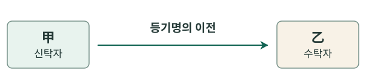
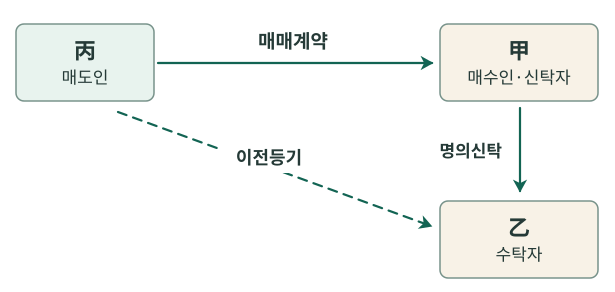
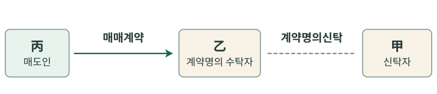
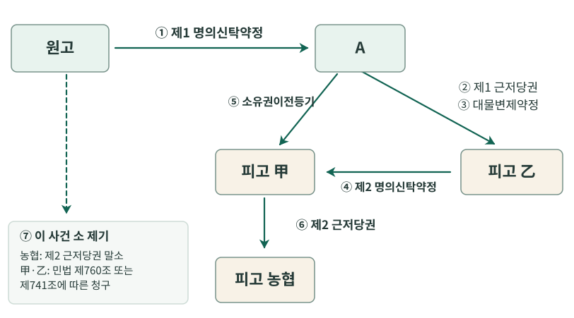

1. 총설
‘명의신탁’은 판례에 의해 형성된 제도로서 민법전에는 아무런 규정이 없다. 판례는 명의신탁에 대해서 신탁자가 소유권을 보류하여 이를 관리․수익하면서, 공부상의 소유명의만을 수탁자로 하여 두는 것이라고 하였다(대법원 1965. 5. 18 선고 65다312 판결). 이렇듯 명의신탁은 진정한 소유자가 아닌 자를 대외적으로 마치 소유자인 것처럼 공부상 표시해 놓는 것으로서, 이때의 명의는 소유자로서의 명의를 의미한다.
(1) 신탁법과 민법상 신탁행위
(가) 신탁법의 신탁행위
신탁법에 의한 신탁관계는 위탁자가 수탁자에게 i) 재산권을 이전하고, ii) 자기 또는 제3자를 위하여 재산을 관리(관리 신탁) 또는 채권의 담보(담보 신탁) 등의 목적을 수행하도록 하는 것이다. 여기에서 신탁이란 위탁자(신탁 설정자)가 특정한 재산권을 수탁자(신탁을 인수하는 자)에게 이전하거나 기타의 처분을 하고, 수탁자로 하여금 일정한 자(수익자: 위탁자 또는 제3자)의 이익을 위하여 또는 특정의 목적을 위하여 그 재산권을 관리․처분하는 법률관계를 말한다(수익자: 위탁자 또는 제3자).
이와 같은 신탁관계는 위탁자와 수탁자 사이의 계약 또는 위탁자의 유언, 위탁자의 선언 등에 의하여 성립한다(신탁법 제3조). 그리고 부동산과 같이 등기해야 할 재산권에 관해서는 그 등기를 함으로써 제3자에게 대항할 수 있다(동법 제4조).
(나) 민법해석상 신탁관계
민사에서 당사자들이 양도담보 또는 추심을 위한 채권양도 등을 하는 경우, 즉 일정한 경제적 목적(채권의 담보 또는 채권의 추심)을 달성하기 위하여 당사자의 일방이 상대방에게 그 목적달성에 필요한 한도 이상의 권리(소유권)를 이전하는 경우(채권담보를 위하여 재산권을 양도하거나, 채권추심을 위하여 그 채권을 양도하는 것 등)에 이를 신탁자와 수탁자 사이의 신탁관계가 설정되는 것으로 해석한다. 따라서 재산권을 이전한 위탁자와 재산권의 이전을 받은 수탁자 사이에서는 일정한 경제적 목적을 수행하기 위한 범위 내에서만 그 재산권을 행사해야 하는 신탁관계가 성립하는 것이다.
이러한 신탁관계를 신탁법이 규정하고 있는 신탁관계와 구별하여, ‘민법해석상 신탁관계’ 또는 ‘민법상 신탁관계’, ‘일반적 신탁관계’라고 한다.
(다) 명의신탁
명의신탁이란 신탁자와 수탁자 사이에 실체적 거래관계 없이, 예컨대 매매 등의 채권계약 형식을 빌려 목적재산의 명의만을 수탁자 앞으로 이전해 두는 것을 말한다.
대법원 1993. 11. 9. 선고 92다31699 판결
유효한 명의신탁에서 실질소유자인 신탁자는 수탁자에게 등기 없이도 소유권을 주장할 수 있다. 하나의 계약으로 여럿에게 신탁했다면 수탁자들도 상호 간에 자기 소유나 지분을 주장할 수 없다.
강의안 수록 원문
대법원 1993. 11. 9. 선고 92다31699 판결
부동산의 명의신탁이라 함은 당사자간의 신탁에 관한 채권계약에 의하여 신탁자가 실질적으로는 그의 소유에 속하는 부동산의 등기명의를 실체적인 거래관계가 없는 수탁자에게 매매 등의 형식으로 이전하여 두는 것을 일컫는 것이니 만큼, 신탁자는 수탁자에 대한 관계에 있어서 등기 없이 그 부동산에 대한 실질적인 소유권을 내세울 수 있는 것이며, 그 부동산이 공유물인 경우 공유자가 다수의 수탁자에게 하나의 명의신탁계약에 의하여 소유명의를 신탁하였다면 그 신탁자와 수탁자 상호관계에서 수탁자는 신탁자에 대하여는 물론 그들 상호간에 있어서도 그 부동산의 소유권 또는 지분권이 자기에게 있음을 주장할 수 없고, 신탁자는 사정 내지 재결명의나 소유권이전등기명의에 관계없이 그 부동산이 자신의 소유임을 주장할 수 있다.
명의신탁은 각종 재산권 거래에 활용되고 있다. 전반적인 특징은 해당 재산권의 소유 등에 대해 조세의 부과 및 소유의 제한 등의 규제가 있어 시장거래에서 특별한 수익을 얻을 수 있는 각종 재화[건설장비 내지 영업용 자동차(지입), 전화 등]의 소유명의를 타인의 이름으로 하여 행정법 등의 규제를 피하면서 실질적으로는 소유자로서 이익을 향유하기 위해 편의적으로 이용되고 있다.
주로 문제가 되는 부동산의 명의신탁에 관해서는, 신탁자가 자기의 부동산을 수탁자의 명의로 등기해 놓고, 신탁자 자신이 그 부동산에 관한 사용․수익 및 처분권 등 실질적 권한을 모두 보유하고 있다. 따라서 등기부상 소유명의자인 수탁자로서는 신탁자에 대한 관계에서 그 재산권을 기초로 재산을 관리․처분할 권한을 갖는다거나 또는 채권담보의 목적으로 재산권을 행사하거나, 채권을 추심하는 등 어떠한 권한도 사실상 보유하지 않는 거래형태이다.
(라) 신탁행위와 명의신탁의 구별
신탁법의 신탁관계와 민법해석상 신탁관계를 설정하는 법률행위를 ‘신탁행위’라고 한다. 이는 명의신탁과 구별하여야 한다. 신탁행위에 의한 신탁관계에 관해서는 재산권인 소유권이 수탁자에게 이전하지만, 수탁자가 신탁자와의 이해관계 내에서는 독립하여 소유권의 내용인 사용․수익․처분권을 행사할 수 없다.
[참조] 신탁법에는 위탁자와 수탁자 사이의 신탁관계가 법률에 의하여 규정되어 있고, 민법해석상 신탁은 양도담보계약이나 추심을 위한 채권양도계약에 의하여 당사자 사이에 신탁관계가 설정된다.
명의신탁에 관해서는 소유권의 등기상 명의만이 수탁자에게 이전되어 있을 뿐이다. 그 실질적 사용․수익․처분권은 신탁자에게 유보되어 있기때문에 신탁자와 수탁자 사이에는 신탁법 또는 민법해석상 신탁관계(재산관리, 재산증식, 재산처분, 수익자를 위한 재산제공, 채권의 만족을 위한 담보제공, 채권의 추심 등)가 존재하지 않는다. 따라서 명의신탁의 경우에는 등기권리증과 같은 권리관계를 증명하는 서류를 실질적 소유자인 신탁자가 소지함이 통상이다(대법원 1985. 1. 29. 선고 84다카1750, 84다카1751 판결).
결과적으로 명의신탁의 수탁자는 위탁자와 체결한 신탁약정에 구속되고, 그 내용과 정도에서 차이가 있다고 할 수 있겠으나, 거래의 복잡성에 상응하여 판례가 독자적 규율체계를 형성하였다고 말할 수 있다.
2. 명의신탁관계의 내용
(1) 문제점
명의신탁은 금융 등의 여신거래(가령, 타인 명의 예금거래)나 그 보유에 관하여 일정한 자격을 요하는 경우(가령, 지입차량)에도 널리 이용된다. 부동산 명의신탁은 이러한 여러 명의신탁 유형의 하나로 볼 수 있다.
부동산 명의신탁에 대해서는, 신탁자가 자신에게 소유권을 보유해 두고 목적물을 여전히 관리․수익하면서 단지 공부상 소유명의만을 수탁자로 해두는 것으로서, 대내적으로는 신탁자가 소유권을 보유하고, 단지 대외적으로만 소유명의를 수탁자의 명의로 해 두는 법률관계 (명의신탁 약정과 수탁자 명의의 등기)라고 설명한다.“당사자 간의 신탁에 관한 채권계약에 의하여 신탁자가 실질적으로는 그의 소유에 속하는 부동산의 등기명의를 실체적 거래관계가 없는 수탁자에게 매매 등의 형식으로 이전하는 두는 것”을 의미하는 것이다.
명의신탁의 경우, 신탁자와 수탁자 사이에 신탁법상 위임관계와 같은 신탁관계가 존재하지는 않는다. 단순히 목적재산의 소유명의만이 수탁자에게 이전되기 때문에 명의신탁계약의 유효성에 관해 의문이 제기될 수 있다. 특히 조세포탈, 투기재산의 은닉 등에 이용되어 법정책적 당위성에 관해 의문이 많이 제기된다.
명의신탁 약정에 따라 수탁자 명의의 등기가 행하여진 경우에, 명의신탁약정이 유효이냐 무효이냐에 따라 명의신탁자와 명의수탁자 사이의 외부관계에 대한 효력은 다르게 형성된다.
(2) 학설, 판례에 따른 법률관계
(가) 부동산의 명의신탁에 관하여, 판례는 명의신탁을 유효한 것으로 보아 왔다. 판례는, 명의신탁관계가 성립하려면 신탁자와 수탁자 사이에 명의신탁약정이 있어야 한다고 본다(대법원 1981. 12. 8. 선고 81다카16175 판결. 나아가 토지의 일부에 대해서만 매매하였음에도 그 전부에 관하여 매수인 앞으로 소유권이전등기가 마쳐진 경우에는, 매매하지 않은 부분에 대하여 당사자 사이에 명의신탁관계가 성립한 것으로 보기도 하였다. 대법원 1981. 7. 28. 선고 80다1819 판결 등 다수).
종래 판례상 명의신탁의 유효를 인정한 경우로서는 i) 재단법인의 설립을 목적으로 재산을 출연하는 때에 그 성립 전까지 발기인 명의로 등기해 놓는 경우(대법원 1973. 2. 28. 선고 72다2344, 2345 판결),
ii) 건물의 실제 건축자가 대지 소유자명의로 건축허가를 받은 후 신축된 건물에 대해서 대지소유자명의로 보존등기를 하는 경우(대법원 1983. 5. 10. 선고 82다카1952 판결), iii) 종중의 재산을 종가의 자손이나 대표자의 소유명의로 등기해 놓는 경우(부동산등기법 제30조 제1항은 종중명의로 등기하는 것을 인정하고 있다). iv) 미분할토지의 일부를 매수하고 그 전부에 대해서 등기한 경우(매수하지 않은 부분에 대한 명의신탁을 인정함) 등이 있다.
이후 부동산 실권리자명의 등기에 관한 법률(이하 ‘부동산실명법’이라 한다)이 1995년 제정되어 1995. 7. 1.부터 시행됨으로써 부동산에 관한 명의신탁약정은 무효로 보는 법조항이 효력을 갖기 시작하였으나, 여전히 부동산실명법은 ｉ) 채무변제를 담보하기 위하여 채권자가 부동산에 관한 물권을 이전받거나 가등기 한 경우, ⅱ) 부동산의 위치와 면적을 특정하여 2인 이상이 구분소유하기로 하는 약정을 하고 그 구분소유자의 공유로 등기하는 경우, ⅲ) 신탁법 또는 ‘자본시장과 금융투자업에 관한 법률에 따른 신탁재산인 사실을 등기한 경우는 그 적용대상에서 제외하고 있고(부동산실명법 제2조 제1호 가.~다.목), ⅳ) 종중이 보유한 부동산에 관한 소유권을 종중 외의 자의 명의로 등기한 경우, ⅱ) 배우자 명의로 부동산에 관한 물권을 등기한 경우, ⅲ) 종교단체 명의로 그 산하 조직이 보유한 부동산에 관한 물권을 등기한 경우로서 조세포탈, 강제집행의 면탈 또는 법령상 제한을 회피를 목적으로 하지 않는 경우는 무효로 보지 않도록 규정하고 있다(부동산실명법 제8조).
아래의 학설에 따른 논의와 대내적・대외적 법률관계에 관한 법리는 위와 같이 부동산실명법의 적용이 없거나 같은 법에 따라 무효가 되지 않는 명의신탁의 경우에 관하여 여전히 유효하다.
[주의] 부동산실명법 시행 전에 유효한 명의신탁 유형으로 인정되던 재단법인 출연재산의 명의신탁이나 건축허가 명의자인 대지소유자 명의의 보존등기가 부동산실명법 시행 이후에도 여전히 유효한 명의신탁인지에 대해서는 아직 확립된 판례가 존재하지 않는다.
(나) 학설에 따른 유무효의 법리
(a) 무효설
이 견해는, 담보신탁이나 관리신탁과 같은 신탁행위와 달리, 명의신탁에서의 소유권양도에 관한 의사표시는 허위표시로서 무효라고 본다(민법 제108조 제1항). 신탁법상 신탁행위에서는 법률행위에 의하여 표시된 ‘법적 효과’(소유권 이전)와 당사자가 꾀하는 ‘경제적 목적’ 사이에 괴리가 있으나 경제적 목적의 측면에서 보면 소유권의 이전은 ‘외관상’ 행위에 지나지 않지만, 법률적 측면에서 보면 내심의 의사표시와 표시상의 효과의사가 완전히 일치한다. 그러나 명의신탁에서는 당사자 사이에 소유 ’명의’를 이전하는 데 합의하고 있을 뿐이지, 실질적 소유권을 상대방이 취득하도록 하지 않는 효과의사를 같이하고 있다. 따라서 명의신탁행위는 허위표시로서 무효라고 한다.
다만, 대외적 관계에서 허위표시의 무효를 가지고 선의의 제3자에게 대항할 수 없으므로 거래의 안전에는 전혀 문제가 없다고 한다.
(b) 유효설
명의신탁행위의 내용을 긍정적으로 해석하려고 한다. 즉, 명의신탁의 당사자 사이에 이루어지는 합의는 신탁자가 내부적으로 소유자가 되고 외부적으로는 수탁자가 소유자로서 표시되도록 하는 내용의 의사표시의 합치일 뿐이다. 다만 이와 같은 적극적 합의와 그 이행으로써, 수탁자는 등기부상 소유자이지만 수탁계약에 반하여 소유권을 행사하지 않을 채권적 의무를 부담할 뿐이다. 이와 같은 약정은 양도담보, 추심을 위한 채권양도 등 다른 민법해석상 신탁행위에 관해도 마찬가지이고 그 범위와 정도상 차이가 있을 뿐이라고 파악하여, 양도담보나 추심을 위한 채권양도 등을 유효로 인정하는 이상, 명의신탁행위도 유효하다고 한다. 그러므로 명의신탁행위가 유효인 한 민법 제108조는 적용될 수 없고, 따라서 수탁자로부터 신탁재산을 양수한 제3자는 악의라 하더라도 권리를 취득한다.
(c) 검토
결론적으로 신탁행위의 특징은 ‘일정한 목적’을 실현하기 위해서 ‘권리를 이전’한다는 데 있다. 예를 들어 명의신탁의 발단이 된 종중재산의 명의신탁에 있어서는, 비법인 사단인 종중의 명의로 등기를 할 수 없어 그 재산을 종중이 보전하려는 일정한 목적을 위하여 문중 자손 중 특정인 명의로 소유권을 이전하는 것이다[조선임야조사령(1918.5.1. 제령 제5호, 폐지) 제8조, 제11조, 제15조 참조].
그런데 이러한 경우에도, 양도담보나 추심을 위한 채권양도에 있어서와 마찬가지로 종중재산을 보존하기 위한 일정한 목적이 있음을 부인할 수는 없다. 따라서 종중재산의 명의신탁행위에는 종중재산을 보존하기 위하여 특정인에게 소유권을 이전하는 합의가 있다고 할 수 있다.
그러나 위와 같이 일정 정도의 소유권이전 합의를 인정할 수 있을지라도, 통상의 명의신탁 사안들에서는 사실상 재산은닉, 조세포탈, 폭리 등의 목적이 내포되어 있는 경우가 많다. 이러한 목적을 위하여 명목상으로만 소유권이전의 합의를 하게 되는데, 이러한 소유권이전의 의사표시를 허위라고 치부하는 데에는 적지 않은 어려움이 내재한다. 이러한 관점에서 명의신탁을 별도의 법 제도로서 규제함이 타당하다.
명의신탁을 유효하게 판단하는 한 민법 제108조는 적용될 수 없다. 따라서 명의신탁에 관하여 수탁자로부터 권리를 양수한 제3자는 선의․악의를 불문하고 그 권리를 취득한다. 이는 신탁자가 스스로 그러한 외관을 창출하여 권리를 상실할 수 있는 위험(Risiko)을 부담하는 것으로 이해할 수 있다.
(다) 대내외의 법률관계
(a) 대내관계
명의신탁을 설정하는 신탁계약의 기본적 내용은 신탁자가 수탁자에 대한 관계에서 목적물의 재산권을 보유한다는 데 있다(대법원 1985. 5. 12. 선고 89다카2653 판결).
대법원 1996. 5. 31. 선고 94다35985 판결
유효한 명의신탁 내부에서는 목적물 및 소유권에서 생긴 권리가 신탁자에게 속한다. 해지하면 수탁자는 그 권리를 이전해야 하고, 수탁자 사망 후에도 그 상속인과 신탁관계가 이어진다.
강의안 수록 원문
대법원 1996. 5. 31. 선고 94다35985 판결
명의신탁관계를 성립시키기 위한 신탁계약의 기본은 신탁자와 수탁자 사이의 내부관계에 있어서 그 목적물의 소유권은 언제나 신탁자가 보유하는 것이므로 그 목적물이 소유권과 관련되어 발생된 권리도 그들 내부관계에 있어서는 신탁자에게 귀속되는 것이므로, 신탁자가 그 신탁계약을 해지하면 수탁자는 그 권리를 신탁자에게 이전하여 줄 의무가 있고, 명의수탁자가 사망하면 그 명의신탁관계는 그 재산상속인과의 사이에 존속하게 된다.
명의신탁으로 부동산의 소유자로 등기된 사람은 그 점유권원의 성질상 자주점유한다고 볼 수 없다. 수탁자의 상속인은 피상속인의 법률상 지위를 그대로 승계하는 것이므로, 상속인이 별도로 소유 의사로서 점유를 개시하였음을 인정할 수 있는 사유가 존재하지 않는 한, 수탁자의 상속인으로서는 취득시효의 효과로 인하여 신탁물인 부동산의 소유권을 취득할 수 없다.
대법원 1987. 11. 10. 선고 85다카1644 판결
명의수탁자의 점유는 원칙적으로 타주점유다. 상속인도 이를 승계하므로 별도로 자주점유를 시작한 사정이 없으면 점유취득시효로 소유권을 얻지 못한다.
강의안 수록 원문
대법원 1987. 11. 10. 선고 85다카1644 판결
명의신탁에 의하여 부동산의 소유자로 등기된 자는 그 점유권원의 성질상 자주점유라 할 수 없고 수탁자의 상속인은 피상속인의 법률상의 지위를 그대로 승계하는 것이므로 상속인이 따로이 소유의 의사로서 점유를 개시하였다고 인정할 수 있는 별개의 사유가 존재하지 않는 한 수탁자의 상속인으로서는 시효의 효과로 인하여 신탁물인 부동산의 소유권을 취득할 수 없다.
또한, 명의신탁한 대지 위에 제3자가 신탁자로부터 승낙을 받아 공작물을 설치한 경우일지라도, 수탁자에게는 그 제3자에 대한 관계에서 물권적 청구권이 인정되지 않기 때문에 수탁자가 위 제3자를 상대로 그 공작물의 철거를 청구할 수 없다(대법원 1965. 8. 24. 선고 65다1081, 1082 판결 참조).
그리고 수탁자가 명의신탁된 토지 위에 건물을 지어 소유하다가 명의신탁이 해지된 경우, 관습법상 법정지상권을 취득할 수도 없다. 왜냐하면, 수탁자는 그 토지에 관한 명의신탁이 이루어진 기간 중 신탁자와의 대내적 관계에서는 그 토지를 소유하고 있다고 볼 수 없기 때문이다.
대법원 1986. 5. 27. 선고 86다카62 판결
수탁자가 신탁토지에 건물을 지은 뒤 신탁해지로 등기가 신탁자에게 회복된 경우, 대내적으로 토지는 처음부터 신탁자 소유였으므로 수탁자는 관습법상 법정지상권을 주장할 수 없다.
강의안 수록 원문
대법원 1986. 5. 27. 선고 86다카62 판결
토지소유권을 명의신탁하면서 수탁자의 임의처분을 방지하기 위해 신탁자명의의 소유권이전등기 청구권보전의 가등기를 함께 경료해 둔 후 수탁자가 위 명의신탁중 동 토지상에 건물을 신축하고 그 후 명의신탁이 해지되어 소유권회복의 방법으로 신탁자명의로 위 가등기에 기한 본등기가 경료된 경우, 위 명의수탁자는 신탁자와의 대내적 관계에 있어서 그 토지가 자기소유에 속하는 것이었다고 주장할 수 없고 따라서 위 건물은 어디까지나 명의신탁자 소유의 토지 위에 지은 것이라 할 것이므로 그 후 소유명의가 신탁자명의로 회복될 당시 위 수탁자가 신탁자들에 대하여 지상건물의 소유를 위한 관습상의 지상권을 취득하였다고 주장할 수 없다.
(b) 대외관계
수탁자는 대외적 관계에서는 완전한 소유자로서의 지위를 가진다. 따라서 수탁자로부터 명의신탁된 부동산을 양수한 제3자는 그의 선의․악의를 불문하고 소유권을 취득한다.
대법원 1963. 9. 19. 선고 63다388 판결
종중 부동산의 명의를 신탁받은 종원이 임의로 매도했더라도 그 매수인은 대외적으로 소유권을 취득한다.
강의안 수록 원문
대법원 1963. 9. 19. 선고 63다388 판결
종중소유의 부동산을 신탁받은 종회원이 자의로 그 부동산을 타인에게 처분하여도 그 제3자는 적법하게 소유권을 취득한다.
대법원 2009. 6. 23. 선고 2008다1132 판결
재건축조합에 신탁된 부동산과 조합이 수탁자에게 새로 분양한 건물·대지권은 동일하지 않다. 신탁자는 종전 명의신탁의 무효를 근거로 신축 부동산의 이전을 청구할 수 없다.
강의안 수록 원문
대법원 2009. 6. 23. 선고 2008다1132 판결
명의신탁자와 명의수탁자의 명의신탁약정에 기하여 명의수탁자 앞으로 부동산소유권이전등기가 마쳐진 후 명의수탁자가 이를 새로운 이해관계를 가진 제3자에게 처분한 경우에는 그 제3자에 대하여 명의신탁약정의 무효를 이유로 대항하지 못하는바, 명의수탁자가 명의신탁 부동산을 재건축조합에게 신탁하고 재건축조합이 이를 바탕으로 재건축사업을 진행한 경우, 재건축조합도 여기서 말하는 새로운 이해관계인인 제3자에 해당하므로, 명의수탁자와 재건축조합 간에 체결된 명의신탁 부동산에 관한 신탁약정이나 명의수탁자가 재건축조합과의 관계에서 취득한 조합원의 지위 등은 특별한 사정이 없는 한 그 명의신탁약정이 명의신탁자에 대한 관계에서 무효라는 사정만으로 영향을 받지 않는다. 따라서 재건축조합이 관리처분계획 인가 및 이에 따른 분양처분의 고시 내지 이전고시 등의 절차를 밟지 않고 조합원들로부터 토지 및 건물 등을 신탁받아 재건축사업을 진행하여 신축한 건물과 그 대지권을 조합원인 명의수탁자와의 분양계약을 통하여 명의수탁자에게 분양한 경우, 명의수탁자의 그 신축 건물 등에 대한 소유권 취득은 유효하고 그 신축 건물 등과 당초의 명의신탁 부동산 사이에는 동일성이 유지되고 있다고 볼 수 없으므로, 명의신탁자는 명의신탁 부동산의 처분을 이유로 명의수탁자에게 손해배상 등을 청구할 수 있음은 별론으로 하고, 당초의 명의신탁약정이 명의신탁자에 대한 관계에서 무효라는 사정을 내세워 명의수탁자를 상대로 명의수탁자가 재건축조합으로부터 분양받은 신축 건물 등에 관한 소유권의 이전을 청구할 권리가 있다고 할 수 없다.
다만, 제3자가 수탁자의 신탁자에 대한 배임행위에 적극 가담한 경우에는 제3자와 수탁자 사이의 계약은 민법 제103조에 의하여 무효가 될 수 있다.
대법원 1991. 4. 23. 선고 91다6221 판결
수탁자로부터 부동산을 취득한 사람은 명의신탁 사실을 알았더라도 원칙적으로 보호된다. 수탁자의 처분을 적극 권유하는 등 배임행위에 적극 가담하면 그 보호를 받지 못한다.
강의안 수록 원문
대법원 1991. 4. 23. 선고 91다6221 판결
부동산의 소유자 명의가 신탁된 경우, 외부적으로는 수탁자만이 소유자로서 유효하게 권리를 행사할 수 있으므로 수탁자로부터 그 부동산을 취득한 자는 수탁자에게 매도나 담보의 제공 등을 적극적으로 권유함으로써 수탁자의 배임행위에 적극 가담한 것이 아닌 한 명의신탁 사실을 알았는지의 여부를 불문하고 부동산의 소유권을 유효하게 취득한다.
제3자가 명의신탁된 목적부동산을 불법적으로 점거하거나 그 소유를 방해하는 경우, 대외적으로는 수탁자만이 물권적 청구권을 행사할 수 있다. 제3자가 목적부동산에 대한 위법한 침해를 한 경우에도, 그로 인한 부당이득의 반환이나 손해배상도 제3자가 청구할 수 있다. 이 경우, 신탁자는 원칙적으로 제3자에 대해서는 직접적으로 어떤 권리도 행사할 수는 없다. 다만, 신탁자는 수탁자를 대위하여 물권적 반환청구․방해배제청구를 할 수 있다.
대법원 1979. 9. 25. 선고 77다1079 전원합의체 판결
유효한 명의신탁에서 제3자의 침해에 대해 직접 배제를 구할 사람은 대외적 소유자인 수탁자다. 신탁자는 수탁자의 권리를 대위행사할 수 있다.
강의안 수록 원문
대법원 1979. 9. 25. 선고 77다1079 전원합의체 판결
재산을 타인에게 신탁한 경우 대외적인 관계에 있어서는 수탁자만이 소유권자로서 그 재산에 대한 제3자의 침해에 대하여 배제를 구할 수 있으며, 신탁자는 수탁자를 대위하여 수탁자의 권리를 행사할 수 있을 뿐 직접 제3자에게 신탁재산에 대한 침해의 배제를 구할 수 없다.
대법원 1992. 10. 27. 선고 92다32494, 32500(병합) 판결
명의신탁자는 신탁계약상 채권을 보전하기 위해 신탁을 먼저 해지하지 않고도 수탁자의 무효등기 말소청구권을 대위행사할 수 있다.
대조 메모 사건번호와 선고일은 대법원 1993. 5. 11. 선고 92다52870 판결의 공식 참조판례 목록과도 일치한다. 이 사건의 본문은 판결문 전재자료로 대조했다. 후속 판례 ↗
강의안 수록 원문
대법원 1992. 10. 27. 선고 92다32494, 32500(병합) 판결
명의신탁자는 수탁자에 대하여 신탁계약상의 채권이 있으므로 명의신탁의해지 없이도 그 채권을 보전하기 위하여 수탁자가 가지고 있는 원인무효로 인한 소유권이전등기말소등기절차이행청구권을 대위행사할 수 있다.
대법원 1992. 12. 22. 선고 92다40204 판결
수탁자가 스스로 말소청구소송을 제기하면 신탁자는 그의 권리를 대위할 수 없다. 다만 다른 수탁자들의 권리를 대위하는 소는 수탁자 한 명이 제기한 소와 중복되지 않는다.
강의안 수록 원문
대법원 1992. 12. 22. 선고 92다40204 판결
가. 명의신탁이 된 부동산에 관하여 원인 없는 등기가 경료된 경우 명의수탁자는 물론이고 명의신탁자도 명의수탁자를 대위하여 등기의 말소청구를 할 수 있고, 다만 명의수탁자가 직접 말소청구소송을 제기하였다면 명의신탁자에게는 대위권이 없다.
나. 명의신탁자가 소송을 제기한 후 명의수탁자 중의 한 사람인 甲이 별도의 소송을 다시 제기하였는데 소장부본 송달관계로 소제기의 효력에 있어 명의신탁자가 제기한 소송이 뒤지는 결과가 되었다 하더라도 명의신탁자가 甲을 제외한 나머지 명의수탁자를 대위하여 소를 제기한 것이라면 그 소가 甲이 제기한 소와 중복되어 소의 이익이 없다고 할 수 없다.
대법원 2001. 8. 21. 선고 2000다36484 판결
명의신탁자는 대외적 소유자가 아니므로 제3자에게 직접 진정명의회복을 위한 이전등기를 청구할 수 없다. 제3자의 침해에는 수탁자의 권리를 대위하는 방법이 문제 된다.
강의안 수록 원문
대법원 2001. 8. 21. 선고 2000다36484 판결
명의신탁에 있어서 대외적으로는 수탁자가 소유자라고 할 것이고, 명의신탁재산에 대한 침해배제를 구하는 것은 대외적 소유권자인 수탁자만이 가능한 것이며, 신탁자는 수탁자를 대위하여 그 침해에 대한 배제를 구할 수 있을 뿐이므로, 명의신탁사실이 인정된다고 할지라도 신탁자는 제3자에 대하여 진정한 등기명의의 회복을 원인으로 한 소유권이전등기청구를 할 수 있는 진정한 소유자의 지위에 있다고 볼 수 없다.
그런데 제3자가 법률상 원인 없이 명의신탁 부동산을 점유하는 경우에, 명의신탁자는 이로 인한 임료 정도의 부당이득금 반환청구권을 수탁자를 대위하여 주장할 수 없다고 본다.
대법원 1991. 10. 22. 선고 91다17207 판결
명의신탁자는 제3자에게 직접 소유권이나 점유·사용권을 주장할 수 없고, 이 사안에서는 무단점유로 생긴 차임 상당 부당이득의 반환도 수탁자를 대위해 청구할 수 없다고 보았다.
강의안 수록 원문
대법원 1991. 10. 22. 선고 91다17207 판결
부동산의 명의신탁자는 제3자에 대하여 직접 그 소유권 및 이에 따른 점유사용권을 주장할 수 없고, 제3자가 법률상 원인 없이 점유함으로 인한 임료 상당의 부당이득반환청구권은 수탁자를 대위하여서도 주장할 수 없다(☞ 대위를 불허하는 구체적 이유는 설시되지 않았으나, 부당이득반환청구권이 금전채권이므로, 피보전권리와 대위권리의 밀접관련성과 대위행사의 유효적절성 요건이 결여되었기 때문으로 이해할 수 있음. 이러한 논지에 따르면, 불법행위에 기한 손해배상청구권의 경우도 신탁자의 대위가 가능할지 신중히 접근할 필요 있음. 다만, 손해배상청구권에 관한 대법원 판례는 아직 나오지 않음).
그리고 수탁자로부터 원인 없이 소유자명의를 넘겨받은 제3자에 대해서 소유권을 회복하기 위한 소 제기권은 수탁자에게만 있다. 다만, 판례는 공작물책임(제758조)과 관련하여 신탁자에게 소유자의 무과실책임을 인정함으로써 내적 관계를 대외적 책임에 반영하고 있다.
대법원 1977. 8. 23. 선고 77다246 판결
주택의 하자로 임차인이 피해를 입은 사안에서, 수탁자가 등기명의인이라는 이유만으로 모든 제3자 관계에서 언제나 수탁자만 소유자로 확정되는 것은 아니라고 보았다.
강의안 수록 원문
대법원 1977. 8. 23. 선고 77다246 판결
명의신탁에 있어서 대외관계 즉 제3자에 대한 관계에 있어서 수탁자를 소유자로 취급하는 것은 어디까지나 선의의 제3자를 보호하고저 함일뿐이요, 결코 제3자에 대한 관계에 있어서 수탁자만을 소유자로 확정하려는 것은 아닐 것이니...(생략)(☞ 명의신탁자가 실질적으로 해당 부동산, 즉 주택을 피해자에게 임대하여 간접점유하다가, 피해자가 그 주택의 설치관리상 하자로 연탄가스에 중독된 사안)
(c) 명의신탁의 해지
해지는 해지권자의 일방적 의사표시로 한다(제543조). 통상적으로 부동산 명의신탁에 관해서는, 신탁자가 소유권을 보유하고, 수탁자는 등기명의 외에 목적부동산에 대하여 어떤 권한도 가지고 있지 않으므로, 신탁자는 특별한 사정이 없는 한 언제든지 명의신탁의 원인이 되는 신탁계약관계를 해지할 수 있다. 이로써 신탁자는 신탁관계의 종료를 이유로 소유명의의 이전등기절차(또는 말소등기절차)의 이행을 청구할 수 있다.
대법원 1998. 4. 24. 선고 97다44416 판결
유효한 명의신탁을 해지한 신탁자는 소유권에 근거해 수탁자 명의 등기의 말소도 청구할 수 있다.
강의안 수록 원문
대법원 1998. 4. 24. 선고 97다44416 판결
명의신탁이 해지된 경우 신탁자는 수탁자에 대하여 소유권에 기하여 등기관계를 실체적 권리관계에 부합하도록 하기 위하여 수탁자 명의의 등기말소를 청구할 수 있는 것이며, 반드시 소유권이전등기만을 청구할 수 있는 것은 아니다.
신탁자의 수탁자에 대한 등기청구권은 (내부적) 소유권에 기하여 행사하는 것이므로 소멸시효의 대상이 되지 않는다(대법원 1991. 11. 26. 선고 91다34387 판결 등 참고).
대법원 1991. 11. 26. 선고 91다34387 판결
유효한 명의신탁은 특별한 사정이 없으면 언제든지 해지할 수 있다. 신탁자가 소유권에 기해 행사하는 해지 원인의 이전등기청구권에는 소멸시효가 적용되지 않는다.
강의안 수록 원문
대법원 1991. 11. 26. 선고 91다34387 판결
부동산의 소유자 명의를 신탁한 자는 특별한 사정이 없는 한 언제든지 명의신탁을 해지하고 소유권에 기하여 신탁해지를 원인으로 한 소유권이전등기절차의 이행을 청구할 수 있는 것으로서, 이와 같은 등기청구권은 소멸시효의 대상이 되지 않는다.
또한 명의신탁 해지는, 그 행위에 기한 대내적 관계의 청산이므로, 대외적으로는 절대적 효력을 주장할 수 없다.
명의신탁관계를 성립시키기 위한 신탁계약의 기본은, 신탁자와 수탁자 사이의 내부관계에서 그 목적물의 소유권을 언제나 신탁자가 보유하기로 하는 것이다. 따라서 그 목적물의 소유권과 관련되어 발생한 권리도 신탁자와 수탁자의 내부관계에서는 신탁자에게 귀속하게 된다. 신탁자가 그 신탁계약을 해지하면 수탁자는 그 권리를 신탁자에게 이전하여 줄 의무가 있고, 명의수탁자가 사망하면 그 명의신탁관계는 그 재산상속인과의 사이에 존속한다.
대법원 1996. 5. 31. 선고 94다35985 판결
명의신탁을 해지하면 수탁자는 목적물의 소유권과 관련해 취득한 권리도 신탁자에게 이전해야 한다. 수탁자 사망 시 신탁관계는 그 상속인과 계속된다.
강의안 수록 원문
대법원 1996. 5. 31. 선고 94다35985 판결
명의신탁관계를 성립시키기 위한 신탁계약의 기본은 신탁자와 수탁자 사이의 내부관계에 있어서 그 목적물의 소유권은 언제나 신탁자가 보유하는 것이므로 그 목적물이 소유권과 관련되어 발생된 권리도 그들 내부관계에 있어서는 신탁자에게 귀속되는 것이므로, 신탁자가 그 신탁계약을 해지하면 수탁자는 그 권리를 신탁자에게 이전하여 줄 의무가 있고, 명의수탁자가 사망하면 그 명의신탁관계는 그 재산상속인과의 사이에 존속하게 된다.
따라서 등기명의가 신탁자에게 반환 또는 이전되기 전까지는 여전히 그 외부적 소유권이 수탁자에게 남아 있게 된다. 만일 그 사이에, 제3자가 수탁자로부터 부동산을 양수받아 등기하면 유효하게 소유권을 취득한다.
대법원 1982. 12. 28. 선고 82다카984 판결
명의신탁 해지 후 신탁자 앞으로 등기를 회복하기 전에 수탁자가 제3자에게 매도·등기하면 원칙적으로 제3자가 보호되고, 신탁자에 대한 이전등기의무는 이행불능이 된다.
강의안 수록 원문
대법원 1982. 12. 28. 선고 82다카984 판결
부동산의 명의수탁자가 명의신탁이 해지된 후 그 명의신탁자 명의로 신탁해지에 따른 등기의 회복이 있기 전에 그 부동산을 제3자에게 매도하여 그에 따른 소유권이전등기가 제3자 명의로 경료된 경우에는 특별한 사정이 없는 한 위의 제3자는 명의신탁자에 앞서 보호되어야 할 것이므로 명의수탁자가 명의신탁자에 대하여 부담하고 있는 소유권이전등기의무는 이행불능상태에 있는 것이라고 보아야 할 것이다.
대법원 2007. 5. 10. 선고 2007다7409 판결
법정 특례에 따라 종중의 명의신탁이 유효해도 대외적 소유권은 수탁자에게 있다. 종중은 원칙적으로 신탁해지에 따른 이전등기청구권을 근거로 수탁자의 집행채권자에게 제3자이의의 소를 제기할 수 없다.
강의안 수록 원문
대법원 2007. 5. 10. 선고 2007다7409 판결
부동산 실권리자명의 등기에 관한 법률 제8조 제1호에 의하면 종중이 보유한 부동산에 관한 물권을 종중 이외의 자의 명의로 등기하는 명의신탁의 경우 조세포탈, 강제집행의 면탈 또는 법령상 제한의 회피를 목적으로 하지 아니하는 경우에는 같은 법 제4조 내지 제7조 및 제12조 제1항· 제2항의 규정의 적용이 배제되어 종중이 같은 법 시행 전에 명의신탁한 부동산에 관하여 같은 법 제11조의 유예기간 이내에 실명등기 또는 매각처분을 하지 아니한 경우에도 그 명의신탁약정은 여전히 그 효력을 유지하는 것이지만, 부동산을 명의신탁한 경우에는 소유권이 대외적으로 수탁자에게 귀속하므로 명의신탁자는 신탁을 이유로 제3자에 대하여 그 소유권을 주장할 수 없고 특별한 사정이 없는 한 신탁자가 수탁자에 대해 가지는 명의신탁해지를 원인으로 한 소유권이전등기청구권은 집행채권자에게 대항할 수 있는 권리가 될 수 없으므로 결국 명의신탁자인 종중은 명의신탁된 부동산에 관하여 제3자이의의 소의 원인이 되는 권리를 가지고 있지 않다고 할 것이다.
대법원 1999. 6. 17. 선고 98다58443 전원합의체 판결
여러 필지의 지분을 신탁받은 사람이 공유물분할로 특정 필지의 단독소유자가 되면, 종전 지분이 그 필지에 집중된 것이다. 신탁자의 의사와 별개로 분할했더라도 명의신탁은 그 필지 전부에 존속한다.
강의안 수록 원문
대법원 1999. 6. 17. 선고 98다58443 전원합의체 판결
여러 필지의 토지의 각 일부 지분을 명의신탁받은 명의수탁자가 임의로 명의신탁관계가 없는 다른 공유자들과의 공유물분할의 협의에 따라 특정 토지를 단독으로 소유하고 나머지 토지에 대한 지분을 다른 공유자에게 이전한 경우, 명의수탁자가 특정 토지를 단독으로 소유하게 된 것은 형식적으로는 다른 공유자들의 지분의 등기명의를 승계취득한 것과 같은 형태를 취하고 있으나 실질적으로는 명의신탁받은 여러 필지의 토지에 분산되어 있는 지분을 분할로 인하여 취득하는 특정 토지에 집중시켜 그에 대한 소유 형태를 변경한 것에 불과하다고 할 것이므로, 그 공유물분할이 명의신탁자의 의사와 관계없이 이루어진 것이라고 하더라도 명의신탁자와 명의수탁자 사이의 명의신탁관계는 위 특정 토지 전부에 그대로 존속한다고 보아야 한다.
대법원 2021. 6. 3. 선고 2018다280316 판결
유효한 명의신탁을 해지한 뒤 신탁자가 이전등기청구권을 제3자에게 양도해도, 수탁자가 동의·승낙하지 않으면 양수인은 수탁자에게 직접 이전등기를 청구할 수 없다.
강의안 수록 원문
대법원 2021. 6. 3. 선고 2018다280316 판결
부동산이 전전 양도된 경우에 중간생략등기의 합의가 없는 한 최종 양수인은 최초 양도인에 대하여 직접 자기 명의로의 소유권이전등기를 청구할 수 없고, 부동산의 양도계약이 순차 이루어져 최종 양수인이 중간생략등기의 합의를 이유로 최초 양도인에게 직접 소유권이전등기청구권을 행사하기 위하여는 관계 당사자 전원의 의사 합치, 즉 중간생략등기에 대한 최초 양도인과 중간자의 동의가 있는 외에 최초 양도인과 최종 양수인 사이에도 중간등기 생략의 합의가 있었음이 요구된다. 그러므로 비록 최종 양수인이 중간자로부터 소유권이전등기청구권을 양도받았다 하더라도 최초 양도인이 양도에 대하여 동의하지 않고 있다면 최종 양수인은 최초 양도인에 대하여 채권양도를 원인으로 하여 소유권이전등기절차 이행을 청구할 수 없다.
이와 같은 법리는 명의신탁자가 부동산에 관한 유효한 명의신탁약정을 해지한 후 이를 원인으로 한 소유권이전등기청구권을 양도한 경우에도 적용된다. 따라서 비록 부동산 명의신탁자가 명의신탁약정을 해지한 다음 제3자에게 ‘명의신탁 해지를 원인으로 한 소유권이전등기청구권’을 양도하였다고 하더라도 명의수탁자가 양도에 대하여 동의하거나 승낙하지 않고 있다면 양수인은 위와 같은 소유권이전등기청구권을 양수하였다는 이유로 명의수탁자에 대하여 직접 소유권이전등기청구를 할 수 없다.
3. 부동산 실권리자명의 등기에 관한 법률
(1) 연혁 및 취지
신탁자가 내부적으로 수탁자에 대한 관계에서 소유권을 보유한 채, (외부적으로) 등기명의상 수탁자가 소유권을 갖도록 하는 명의신탁은, 과거에는 주로 종중재산과 관련하여 형성되었으나, 근래에 와서 세금의 포탈․투기․재산은닉 등 탈법과 불법수단으로 이용되면서 사회적 물의를 일으켰다. 이에 따라 위와 같은 부정행위를 규제하기 위하여 부동산실명법이 1995년 제정되었다.
부동산실명법은 부동산에 관한 소유권 기타 물권을 실체적 권리관계에 부합하도록 실권리자명의로 등기하게 함으로써 부동산등기제도를 악용한 투기․탈세․탈법행위 등 반사회적 행위를 방지하고 부동산거래의 정상화와 부동산가격의 안정을 도모하여 국민경제의 건전한 발전에 이바지함을 목적으로 한다(부동산실명법 제1조).
[부동산실명법에 의한 무효의 위헌 여부에 관한 헌재 결정〕명의신탁의 효력과 관련된 규정들은 헌법 제37조 2항의 질서유지 또는 공공복리를 위하여 필요한 조항으로서, 헌법 제119조 1항의 자본주의적 시장경제질서 내지 제10조의 행복추구권에 내재된 사적 자치의 원칙 및 재산권보장의 원칙의 본질을 침해하였다고 볼 수 없다. 그리고 명의신탁의 사법적 효력을 부인하는 입법목적은 정당하고, 위와 같은 입법목적을 달성하기 위하여 명의신탁약정의 사법적 효력을 부인하는 것 또한 그 수단으로서 적절한 것으로 판단되며, 입법목적의 달성을 위하여 현재 상태에서는 부동산실명법의 규정과 같이 명의신탁의 효력을 부인하는 방법이 불가피하다고 할 것이고, 부동산실명법에 의하여 달성되는 공익에 비하여 제한받는 기본권의 정도가 과하다고 볼 수 없으므로, 각 법조항은 헌법 제37조 2항의 과잉금지의 원칙에 위반된다고 할 수 없다.
(2) 적용범위
(가) 부동산에 관한 소유권 기타 물권을 보유한 자 또는 사실상 취득하거나 취득하려고 하는 자(실권리자)가 타인과의 사이에서 대내적으로는 실권리자가 부동산에 관한 물권을 보유하거나 보유하기로 하고 그에 관한 등기(가등기를 포함)는 그 타인의 명의로 하기로 하는 약정(명의신탁약정)(부동산실명법 제2조 제1호)에 대하여 적용된다. 소유권 기타 물권도 규율하기 때문에 소유권등기뿐만 아니라 담보목적의 가등기, 저당권등기도 규율대상이 된다.
예외적으로 매매대금의 지급을 담보하기 위하여 당사자 합의로 소유권이전등기를 매수인에게 경료하지 않은 상태에서 목적부동산 위에 근저당권자를 매도인이 지정하는 제3자로, 매도인을 채무자로 하여 근저당권을 설정한 경우에 그 근저당권설정등기는 부동산실명법의 취지나 담보물권의 부종성에 반하지 않기 때문에 매도인․매수인․제3자의 합의를 전제로 제한적으로 유효하다고 본다.
대법원 2001. 3. 15. 선고 99다48948 전원합의체 판결
채권자·채무자·제3자의 합의로 채권이 제3자에게 실질적으로 귀속되었다면 제3자를 근저당권자로 등기할 수 있다. 매수인 대신 등기명의인인 매도인을 채무자로 적었다는 사정만으로 부종성에 반하지 않는다.
강의안 수록 원문
대법원 2001. 3. 15. 선고 99다48948 전원합의체 판결
근저당권은 채권담보를 위한 것이므로 원칙적으로 채권자와 근저당권자는 동일인이 되어야 하지만, 제3자를 근저당권 명의인으로 하는 근저당권을 설정하는 경우 그 점에 대하여 채권자와 채무자 및 제3자 사이에 합의가 있고, 채권양도, 제3자를 위한 계약, 불가분적 채권관계의 형성 등 방법으로 채권이 그 제3자에게 실질적으로 귀속되었다고 볼 수 있는 특별한 사정이 있는 경우에는 제3자 명의의 근저당권설정등기도 유효하다고 보아야 할 것이고, 한편 부동산을 매수한 자가 소유권이전등기를 마치지 아니한 상태에서 매도인인 소유자의 승낙 아래 매수 부동산을 타에 담보로 제공하면서 당사자 사이의 합의로 편의상 매수인 대신 등기부상 소유자인 매도인을 채무자로 하여 마친 근저당권설정등기는 실제 채무자인 매수인의 근저당권자에 대한 채무를 담보하는 것으로서 유효하다고 볼 것인바, 위 양자의 형태가 결합된 근저당권이라 하여도 그 자체만으로는 부종성의 관점에서 근저당권이 무효라고 보아야 할 어떤 질적인 차이를 가져오는 것은 아니라 할 것이다. 그리고 매매잔대금 채무를 지고 있는 부동산 매수인이 매도인과 사이에 소유권이전등기를 경료하지 아니한 상태에서 그 부동산을 담보로 하여 대출받는 돈으로 매매잔대금을 지급하기로 약정하는 한편, 매매잔대금의 지급을 위하여 당좌수표를 발행·교부하고 이를 담보하기 위하여 그 부동산에 제1 순위 근저당권을 설정하되, 그 구체적 방안으로서 채권자인 매도인과 채무자인 매수인 및 매도인이 지정하는 제3자 사이의 합의 아래 근저당권자를 제3자로, 채무자를 매도인으로 하기로 하고, 이를 위하여 매도인이 제3자로부터 매매잔대금 상당액을 차용하는 내용의 차용금증서를 작성·교부하였다면, 매도인이 매매잔대금 채권의 이전 없이 단순히 명의만을 제3자에게 신탁한 것으로 볼 것은 아니고, 채무자인 매수인의 승낙 아래 매매잔대금 채권이 제3자에게 이전되었다고 보는 것이 일련의 과정에 나타난 당사자들의 진정한 의사에 부합하는 해석일 것이므로, 제3자 명의의 근저당권설정등기는 그 피담보채무가 엄연히 존재하고 있어 그 원인이 없거나 부종성에 반하는 무효의 등기라고 볼 수 없다.
(나) 부동산 양도담보 등에 관한 규율
다음의 경우는 부동산실명법에서 규제하는 명의신탁약정으로 보지 않는다(부동산실명법 제2조 제1호).
① 채무의 변제를 담보하기 위하여 채권자가 부동산에 관한 물권을 이전받거나(양도담보), 가등기하는 경우(가등기 담보)(추심형 명의신탁)와 신탁법 또는 자본시장과 금융투자업에 관한 법률에 의한 신탁재산인 사실을 등기한 경우에는 실명법의 규제대상에서 배제된다(같은 법 제2조 제1호 가․다.목). ② 부동산의 위치와 면적을 특정하여 2인 이상이 구분소유하기로 약정하고, 그 구분소유자의 공유로 등기하는 상호명의신탁의 경우는 규율대상에 해당하지 않는다(동법 제2조 제1호 나.목).
(다) 종중, 배우자에 대한 특례
종중재산의 명의신탁과 부부(여기에 사실혼배우자는 포함되지 않는다. 대법원 1999. 5. 14. 선고 99두35 판결) 사이의 명의신탁이나 종교단체 산하조직의 종교단체에 대한 명의신탁은, 그것이 조세포탈 및 강제집행의 면제 또는 법령상 제한의 회피를 목적으로 하지 않는 한 유효하다(부동산실명법 제8조 제1호. 같은 법이 정한 과징금이나 벌칙 등의 적용을 받지 않음).
대법원 2013. 1. 24. 선고 2011다99498 판결
부동산실명법상 특례로 이미 유효하게 성립한 부부간 명의신탁은 배우자의 사망으로 혼인관계가 끝난 뒤에도 다른 상속인들과의 관계에서 유효하게 존속한다.
강의안 수록 원문
대법원 2013. 1. 24. 선고 2011다99498 판결
부동산 실권리자명의 등기에 관한 법률(이하 ‘부동산실명법’이라 한다) 제8조 제2호는 ‘배우자 명의로 부동산에 관한 물권을 등기한 경우’로서 조세포탈, 강제집행의 면탈 또는 법령상 제한의 회피를 목적으로 하지 아니하는 경우에는 그 명의신탁약정과 그 약정에 기하여 행하여진 물권변동을 무효로 보는 위 법률 제4조 등을 적용하지 아니한다고 규정하고 있다. 명의신탁을 받은 사람이 사망하면 그 명의신탁관계는 재산상속인과의 사이에 그대로 존속한다고 할 것인데, 부동산실명법 제8조 제2호의 문언상 명의신탁약정에 따른 명의신탁등기의 성립 시점에 부부관계가 존재할 것을 요구하고 있을 뿐 부부관계의 존속을 그 효력 요건으로 삼고 있지 아니한 점, 부동산실명법상 제8조 제2호에 따라 일단 유효한 것으로 인정된 부부간 명의신탁에 대하여 그 후 배우자 일방의 사망 등으로 부부관계가 해소되었음을 이유로 이를 다시 무효화하는 별도의 규정이 존재하지 아니하는 점, 부부간 명의신탁이라 하더라도 조세포탈 등 목적이 없는 경우에 한하여 위 조항이 적용되는 것이므로 부부관계가 해소된 이후에 이를 그대로 유효로 인정하더라도 새삼 부동산실명법의 입법 취지가 훼손될 위험성은 크지 아니한 점 등에 비추어 보면, 부동산실명법 제8조 제2호에 따라 부부간 명의신탁이 일단 유효한 것으로 인정되었다면 그 후 배우자 일방의 사망으로 부부관계가 해소되었다 하더라도 그 명의신탁약정은 사망한 배우자의 다른 상속인과의 관계에서도 여전히 유효하게 존속한다고 보아야 한다.
(3) 명의신탁의 유형과 법률관계
(가) 양자간 또는 이전형 명의신탁
예를 들어, 甲과 乙이 명의신탁을 약속하고 甲 명의의 소유권등기를 乙 명의로 이전하는 전형적인 명의신탁이다.

부동산실명법 제4조 제1항: 신탁약정 무효 제4조 제2항 본문: 이전등기 무효 제4조 제3항: 乙(수탁자)의 처분 시, 제3자는 유효하게 소유권 취득
제5조(과징금, 신탁자), 제7조(벌칙, 신탁자, 수탁자)
신탁자의 명의로 되어있는 부동산의 등기를 명의신탁약정에 의하여 수탁자에게 이전등기한 경우, 그 이전등기는 무효이다. 다만, 명의신탁약정은 무효이므로, 명의신탁자가 신탁약정 해지를 원인으로 소유권이전등기나 그 말소를 청구할 수 없다.
대법원 1999. 1. 26. 선고 98다1027 판결
실명법 시행 전의 명의신탁에 관해 유예기간 안에 실명등기 등을 하지 않아 약정과 물권변동이 무효가 되면, 신탁해지를 원인으로 한 이전등기를 청구할 수 없다.
강의안 수록 원문
대법원 1999. 1. 26. 선고 98다1027 판결
부동산실권리자명의등기에관한법률 제11조, 제12조 제1항과 제4조의 규정에 의하면, 같은 법 시행 전에 명의신탁약정에 의하여 부동산에 관한 물권을 명의수탁자의 명의로 등기하도록 한 명의신탁자는 같은 법 제11조에서 정한 유예기간 이내에 실명등기 등을 하여야 하고, 유예기간이 경과한 날 이후부터 명의신탁약정과 그에 따라 행하여진 등기에 의한 부동산에 관한 물권변동이 무효가 되므로 명의신탁자는 더 이상 명의신탁해지를 원인으로 하는 소유권이전등기를 청구할 수 없다.
신탁자는 수탁자를 상대로 소유권에 기한 방해배제청구권을 행사하여 수탁자 명의 등기의 말소를 구하거나 진정명의회복을 원인으로 하는 소유권이전등기를 구할 수 있다. 한편 제3자가 위 부동산을 매입하여 이전등기를 완료한 경우에는 신탁자는 그 부동산에 대한 소유권을 상실한다(부동산실명법 제4조 제3항).
대법원 2013. 2. 28. 선고 2010다89814 판결
양자간 명의신탁에서 제3자가 유효하게 소유권을 취득하면 신탁자의 소유권에 기한 등기청구권도 사라진다. 수탁자가 훗날 재취득해도 그 청구권은 부활하지 않는다.
강의안 수록 원문
대법원 2013. 2. 28. 선고 2010다89814 판결
양자간 등기명의신탁에서 명의수탁자가 신탁부동산을 처분하여 제3취득자가 유효하게 소유권을 취득하고 이로써 명의신탁자가 신탁부동산에 대한 소유권을 상실하였다면, 명의신탁자의 소유권에 기한 물권적 청구권, 즉 말소등기청구권이나 진정명의회복을 원인으로 한 이전등기청구권도 더 이상 그 존재 자체가 인정되지 않는다. 그 후 명의수탁자가 우연히 신탁부동산의 소유권을 다시 취득하였다고 하더라도 명의신탁자가 신탁부동산의 소유권을 상실한 사실에는 변함이 없으므로, 여전히 물권적 청구권은 그 존재 자체가 인정되지 않는다.
대법원 2012. 10. 25. 선고 2011다107382 판결
양자간 명의신탁의 부동산은 신탁자의 책임재산이다. 신탁자가 실질적 당사자로서 제3자에게 처분해 채무초과를 일으키거나 심화시킨 경우, 그 거래를 취소하고 제3자가 수탁자 앞으로 말소등기하도록 할 수 있다.
강의안 수록 원문
대법원 2012. 10. 25. 선고 2011다107382 판결
‘부동산 실권리자명의 등기에 관한 법률’의 시행 후에 부동산의 소유자가 등기명의를 수탁자에게 이전하는 이른바 양자간 명의신탁의 경우 명의신탁약정에 의하여 이루어진 수탁자 명의의 소유권이전등기는 원인무효로서 말소되어야 하고, 부동산은 여전히 신탁자의 소유로서 신탁자의 일반채권자들의 공동담보에 제공되는 책임재산이 된다. 따라서 신탁자의 일반채권자들의 공동담보에 제공되는 책임재산인 신탁부동산에 관하여 채무자인 신탁자가 직접 자신의 명의 또는 수탁자의 명의로 제3자와 매매계약을 체결하는 등 신탁자가 실질적 당사자가 되어 법률행위를 하는 경우 이로 인하여 신탁자의 소극재산이 적극재산을 초과하게 되거나 채무초과상태가 더 나빠지게 되고 신탁자도 그러한 사실을 인식하고 있었다면 이러한 신탁자의 법률행위는 신탁자의 일반채권자들을 해하는 행위로서 사해행위에 해당할 수 있다. 이 경우 사해행위취소의 대상은 신탁자와 제3자 사이의 법률행위가 될 것이고, 원상회복은 제3자가 수탁자에게 말소등기절차를 이행하는 방법에 의할 것이다.
대법원 2019. 6. 20. 선고 2013다218156 전원합의체 판결
명의신탁이 부동산실명법에 위반된다는 사정만으로 부동산 이전이 당연히 불법원인급여가 되는 것은 아니다. 농지법상 제한을 피하려고 한 경우도 마찬가지다.
강의안 수록 원문
대법원 2019. 6. 20. 선고 2013다218156 전원합의체 판결
부동산 실권리자명의 등기에 관한 법률(이하 ‘부동산실명법’이라 한다) 규정의 문언, 내용, 체계와 입법 목적 등을 종합하면, 부동산실명법을 위반하여 무효인 명의신탁약정에 따라 명의수탁자 명의로 등기를 하였다는 이유만으로 그것이 당연히 불법원인급여에 해당한다고 단정할 수는 없다. 이는 농지법에 따른 제한을 회피하고자 명의신탁을 한 경우에도 마찬가지이다.
대법원 2021. 6. 3. 선고 2016다34007 판결
양자간 명의신탁에서 수탁자가 목적물을 임의처분하면 신탁자의 소유권을 침해한 민사상 불법행위다. 형사상 횡령죄 성립 여부와 별도로 손해배상책임을 진다.
강의안 수록 원문
대법원 2021. 6. 3. 선고 2016다34007 판결
명의수탁자가 양자간 명의신탁에 따라 명의신탁자로부터 소유권이전등기를 넘겨받은 부동산을 임의로 처분한 행위가 형사상 횡령죄로 처벌되지 않더라도(대법원 2021. 2. 18. 선고 2016도18761 판결), 위 행위는 명의신탁자의 소유권을 침해하는 행위로서 형사상 횡령죄의 성립 여부와 관계없이 민법상 불법행위에 해당하여 명의수탁자는 명의신탁자에게 손해배상책임을 부담한다.
대법원 2023. 1. 12. 선고 2022다266874 판결
신탁자가 말소소송을 취하해 재소가 금지됐어도 소유권이 없어지는 것은 아니다. 수탁자가 무효등기 말소를 거부하기만 한 단계에서는 부동산 가액 전부의 손해가 발생했다고 볼 수 없다.
강의안 수록 원문
대법원 2023. 1. 12. 선고 2022다266874 판결
甲이 乙 앞으로 마쳐준 부동산 소유권이전등기가 명의신탁에 의한 것으로 무효라고 주장하면서 乙을 상대로 소유권이전등기말소청구의 소를 제기하여 제1심과 항소심 모두 승소하였으나 상고심 계속 중 소를 취하하였는데, 그 후 재차 乙을 상대로 소유권이전등기의 말소를 구하는 소를 제기하였다가 부동산 가액 상당 손해배상을 구하는 것으로 청구를 변경한 사안에서, 불법행위로 인한 재산상 손해는 위법한 가해행위로 생긴 재산상 불이익, 즉 위법행위가 없었더라면 존재하였을 재산상태와 위법행위가 가해진 현재의 재산상태의 차이를 말하므로, 부동산 교환가치 전액이 甲의 손해가 되려면 乙의 행위 때문에 부동산이 멸실되거나 甲이 소유권을 잃는 등의 결과가 사회통념상 현실적으로 발생해야 하는데, 양자 간 등기명의신탁의 경우 부동산 실권리자명의 등기에 관한 법률에 따라 명의신탁 약정과 그에 터 잡은 등기가 무효이므로, 甲이 부동산 소유권을 여전히 보유하고 있는 이상 乙 앞으로 마친 소유권이전등기로 인하여 어떠한 손해를 입게 되는 것은 아니며, 재소금지의 효과는 동일한 당사자 사이에 같은 소송물에 관하여 다시 소를 제기하지 못하게 하는 것일 뿐 실체상의 권리는 소멸하지 않으므로, 甲이 종전 소송을 취하함에 따라 원인무효인 乙 명의 소유권이전등기의 말소를 소송을 통해 강제할 수 없을 뿐 부동산 소유권은 계속 갑에게 남아 있고, 乙이 부동산을 제3자에게 처분할 경우에 비로소 甲이 소유권을 상실하게 되는데도, 이와 달리 乙이 원인무효인 소유권이전등기의 말소를 거부하고 있을 뿐인데도 甲의 소유권이 침해되어 부동산 가액 상당 손해가 발생했다고 보아 그 금액의 배상을 명한 원심판단에 법리오해의 잘못이 있다고 한 사례.
(나) 3자간 등기명의신탁(중간생략등기형 명의신탁)
예를 들어, 매수인 甲이 매도인 丙과 매매계약을 체결하면서 등기명의를 수탁자인 乙과 합의하여 乙 명의로 이전하는 유형이다. 즉, 명의신탁자가 매도인으로부터 부동산 매입계약을 체결한 후 신탁자의 명의가 아닌 수탁자의 명의로 이전등기를 하는 경우이다.

부동산실명법 제4조 제1항: 신탁약정 무효(甲-乙)
제4조 제2항 본문: 이전등기 무효(丙-乙)
제4조 제3항: 乙(수탁자)의 처분 시, 제3자는 유효하게 소유권 취득
제5조(과징금, 신탁자), 제7조(벌칙, 신탁자, 수탁자, 공범-매도인)
이러한 경우에, 명의신탁약정은 무효(부동산실명법 제4조 1항)이므로, 수탁자는 소유권을 취득하지 못한다(같은 법 제4조 2항). 그러므로 신탁자(매수인)는 명의신탁약정 해지를 원인으로 수탁자를 상대로 직접 소유권이전등기나 수탁자 명의 등기의 말소를 구할 수 없고, 부당이득반환을 원인으로 한 소유권이전등기도 구할 수 없다(단, 수탁자 명의이던 목적부동산이 제3자에게 처분된 경우는 다름, 아래 2009다41493 판결 등 참조).
그런 수탁자 명의의 등기가 무효이므로, 매도인이 그 소유권에 기한 물권적 청구권(방해배제청구권)으로 수탁자를 상대로 소유권이전등기의 말소등기를 청구할 수 있다. 진정등기명의회복을 위한 소유권이전등기청구도 가능하다. 다만, 매매계약 자체가 무효가 되는 것은 아니다. 따라서 매수인(신탁자)는 매매계약에 기한 소유권이전등기청구권을 보전하기 위하여 매도인의 수탁자에 대한 소유권이전(말소)등기청구권을 대위 행사할 수 있다. 매도인(또는 매도인을 대위한 매수인, 즉 신탁자)이 수탁자에게 소유권이전등기나 말소등기를 청구하는 것은 매매계약 무효에 기한 반환(원상회복)을 구하는 것이 아니므로, 수탁자는 매도인이 매매대금을 신탁자에게 반환할 때까지 말소 또는 이전등기 이행을 거부하는 내용의 동시이행항변을 할 수 없다.
대법원 2004. 6. 25. 선고 2004다6764 판결
3자간 등기명의신탁에서 매도인과 신탁자의 매매는 유효하다. 수탁자가 자발적으로 신탁자에게 곧바로 이전한 등기는 결과적으로 실체관계에 부합해 유효하다.
강의안 수록 원문
대법원 2004. 6. 25. 선고 2004다6764 판결
명의신탁자가 소유자로부터 부동산을 양도받으면서 명의수탁자와 사이에 명의신탁약정을 하여 소유자로부터 바로 명의수탁자 명의로 소유권이전등기를 하는 이른바 3자간 등기명의신탁에 있어서, 명의수탁자가 부동산실권리자명의등기에관한법률에서 정한 유예기간 경과 후에 자의로 명의신탁자에게 바로 소유권이전등기를 경료해 준 경우, 같은 법에서 정한 유예기간의 경과로 기존 명의신탁약정과 그에 의한 명의수탁자 명의의 등기가 모두 무효로 되고, 명의신탁자는 명의신탁약정의 당사자로서 같은 법 제4조 제3항의 제3자에 해당하지 아니하므로 명의신탁자 명의의 소유권이전등기도 무효가 된다 할 것이지만, 한편 같은 법은 매도인과 명의신탁자 사이의 매매계약의 효력을 부정하는 규정을 두고 있지 아니하여 유예기간 경과 후로도 매도인과 명의신탁자 사이의 매매계약은 여전히 유효하므로, 명의신탁자는 매도인에 대하여 매매계약에 기한 소유권이전등기를 청구할 수 있고, 그 소유권이전등기청구권을 보전하기 위하여 매도인을 대위하여 명의수탁자에게 무효인 그 명의 등기의 말소를 구할 수도 있으므로, 명의수탁자가 명의신탁자 앞으로 바로 경료해 준 소유권이전등기는 결국 실체관계에 부합하는 등기로서 유효하다.
대법원 2022. 9. 29. 선고 2022다228933 판결
신탁자하고만 거래한 사람은 실명법상 보호되는 제3자가 아니더라도 등기가 실체관계에 부합한다고 주장할 수 있다. 3자간 등기명의신탁에서 신탁자의 처분 약정대로 수탁자가 제3자에게 이전한 등기는 원칙적으로 유효하다.
강의안 수록 원문
대법원 2022. 9. 29. 선고 2022다228933 판결
[1] 부동산 실권리자명의 등기에 관한 법률 제4조 제3항에 정한 ‘제3자’는 명의수탁자가 물권자임을 기초로 그와 새로운 이해관계를 맺은 사람을 말하고, 이와 달리 오로지 명의신탁자와 부동산에 관한 물권을 취득하기 위한 계약을 맺고 단지 등기명의만을 명의수탁자로부터 경료받은 것 같은 외관을 갖춘 자는 위 조항의 제3자에 해당하지 아니하므로, 위 조항에 근거하여 무효인 명의신탁등기에 터 잡아 경료된 자신의 등기의 유효를 주장할 수는 없다. 그러나 이러한 자도 자신의 등기가 실체관계에 부합하는 등기로서 유효하다는 주장은 할 수 있다.
[2] 이른바 3자간 등기명의신탁의 경우 명의신탁약정과 그에 기한 등기는 무효로 되고[부동산 실권리자명의 등기에 관한 법률(이하 ‘부동산실명법’이라 한다) 제4조 제1항, 제2항], 그 결과 명의신탁된 부동산은 매도인 소유로 복귀하므로 매도인은 명의수탁자에게 무효인 그 명의 등기의 말소를 구할 수 있게 된다. 한편 부동산실명법은 매도인과 명의신탁자 사이의 매매계약의 효력을 부정하는 규정을 두고 있지 아니하므로 매도인과 명의신탁자 사이의 매매계약은 여전히 유효하고, 명의신탁자는 매도인에 대하여 매매계약에 기한 소유권이전등기를 청구하거나 그 소유권이전등기청구권을 보전하기 위하여 매도인을 대위하여 명의수탁자에게 무효인 그 명의 등기의 말소를 구할 수 있다. 그러므로 이러한 지위에 있는 명의신탁자가 제3자와 사이에 부동산 처분에 관한 약정을 맺고 그 약정에 기하여 명의수탁자에서 제3자 앞으로 마쳐준 소유권이전등기는 다른 특별한 사정이 없는 한 실체관계에 부합하는 등기로서 유효하다고 보아야 한다.
대법원 2008. 11. 27. 선고 2008다55290, 55306 판결
3자간 등기명의신탁이 무효가 되어도 신탁자는 매도인에게 매매에 따른 등기를 청구할 수 있다. 소유권이 없는 수탁자에게 부당이득으로 부동산 자체의 이전을 청구할 수는 없다.
강의안 수록 원문
대법원 2008. 11. 27. 선고 2008다55290, 55306 판결
이른바 3자간 등기명의신탁의 경우 부동산 실권리자명의 등기에 관한 법률에서 정한 유예기간 경과에 의하여 그 명의신탁 약정과 그에 의한 등기가 무효로 되더라도 명의신탁자는 매도인에 대하여 매매계약에 기한 소유권이전등기청구권을 보유하고 있어 그 유예기간의 경과로 그 등기 명의를 보유하지 못하는 손해를 입었다고 볼 수 없다. 또한 명의신탁 부동산의 소유권이 매도인에게 복귀한 마당에 명의신탁자가 무효인 등기의 명의인인 명의수탁자를 상대로 그 이전등기를 구할 수도 없다. 결국 3자간 등기명의신탁에 있어서 명의신탁자는 명의수탁자를 상대로 부당이득반환을 원인으로 한 소유권이전등기를 구할 수 없다.
대법원 2011. 9. 8. 선고 2009다49193, 49209 판결
3자간 등기명의신탁이 무효이면 신탁자는 매도인을 대위해 수탁자 등기의 말소를 구할 수 있다. 수탁자의 처분이나 수용으로 제3자가 소유권을 취득하면 수탁자는 받은 처분대금·보상금을 신탁자에게 반환해야 한다.
강의안 수록 원문
대법원 2011. 9. 8. 선고 2009다49193, 49209 판결
[1] 부동산 실권리자명의 등기에 관한 법률에 의하면, 이른바 3자간 등기명의신탁의 경우 같은 법에서 정한 유예기간의 경과에 의하여 기존 명의신탁약정과 그에 의한 등기가 무효로 되고 그 결과 명의신탁된 부동산은 매도인 소유로 복귀하므로, 매도인은 명의수탁자에게 무효인 명의 등기의 말소를 구할 수 있고, 한편 같은 법에서 정한 유예기간 경과 후에도 매도인과 명의신탁자 사이의 매매계약은 여전히 유효하므로, 명의신탁자는 매도인에게 매매계약에 기한 소유권이전등기를 청구할 수 있고, 소유권이전등기청구권을 보전하기 위하여 매도인을 대위하여 명의수탁자에게 무효인 명의 등기의 말소를 구할 수 있다.
[2] 이른바 3자간 등기명의신탁에서 부동산 실권리자명의 등기에 관한 법률에서 정한 유예기간이 경과한 후 명의수탁자가 신탁부동산을 임의로 처분하거나 강제수용이나 공공용지 협의취득 등을 원인으로 제3취득자 명의로 이전등기가 마쳐진 경우, 특별한 사정이 없는 한 제3취득자는 유효하게 소유권을 취득하게 되므로(같은 법 제4조 제3항), 그로 인하여 매도인의 명의신탁자에 대한 소유권이전등기의무는 이행불능으로 되고 그 결과 명의신탁자는 신탁부동산의 소유권을 이전받을 권리를 상실하는 손해를 입게 되는 반면, 명의수탁자는 신탁부동산의 처분대금이나 보상금을 취득하는 이익을 얻게 되므로, 명의수탁자는 명의신탁자에게 그 이익을 부당이득으로 반환할 의무가 있다.
대법원 2019. 7. 25. 선고 2019다203811, 203828 판결
3자간 등기명의신탁에서 제3자가 소유권을 취득해 신탁자가 이전등기를 받을 수 없게 되면 수탁자는 취득한 이익을 반환해야 한다. 경매로 이전된 경우도 같다.
강의안 수록 원문
대법원 2019. 7. 25. 선고 2019다203811, 203828 판결
3자간 등기명의신탁에서 명의수탁자가 명의신탁 부동산을 임의로 처분하거나 강제수용이나 공공용지 협의취득 등을 원인으로 제3취득자 명의로 이전등기가 마쳐진 경우, 특별한 사정이 없는 한 제3취득자는 유효하게 소유권을 취득하게 되므로(법 제4조 제3항), 그로 인하여 매도인의 명의신탁자에 대한 소유권이전등기의무는 이행불능이 되고 그 결과 명의신탁자는 명의신탁 부동산의 소유권을 이전받을 권리를 상실하는 손해를 입게 되는 반면, 명의수탁자는 명의신탁 부동산의 처분대금이나 보상금을 취득하는 이익을 얻게 되므로, 명의수탁자는 명의신탁자에게 그 이익을 부당이득으로 반환할 의무가 있다. 이러한 법리는 3자간 등기명의신탁에서 명의신탁 부동산에 관하여 경매를 원인으로 제3취득자 명의로 이전등기가 마쳐진 경우에도 마찬가지로 적용된다.
대법원 2021. 9. 9. 선고 2018다284233 전원합의체 판결
전원합의체는 3자간 등기명의신탁의 부동산이 처분되거나 수용돼 제3자가 소유권을 취득한 경우, 수탁자가 받은 처분대금·보상금 등을 신탁자에게 부당이득으로 반환한다는 법리를 유지했다.
강의안 수록 원문
대법원 2021. 9. 9. 선고 2018다284233 전원합의체 판결
3자간 등기명의신탁에서 명의수탁자의 임의처분 또는 강제수용이나 공공용지 협의취득 등(이러한 소유명의 이전의 원인관계를 통틀어 이하에서는 ‘명의수탁자의 처분행위 등’이라 한다)을 원인으로 제3자 명의로 소유권이전등기가 마쳐진 경우, 특별한 사정이 없는 한 제3자는 유효하게 소유권을 취득한다[부동산 실권리자명의 등기에 관한 법률(이하 ‘부동산실명법’이라 한다) 제4조 제3항]. 그 결과 매도인의 명의신탁자에 대한 소유권이전등기의무는 이행불능이 되어 명의신탁자로서는 부동산의 소유권을 이전받을 수 없게 되는 한편, 명의수탁자는 부동산의 처분대금이나 보상금 등을 취득하게 된다. 판례는, 명의수탁자가 그러한 처분대금이나 보상금 등의 이익을 명의신탁자에게 부당이득으로 반환할 의무를 부담한다고 보고 있다. 이러한 판례는 타당하므로 그대로 유지되어야 한다.
대법원 2022. 6. 9. 선고 2020다208997 판결
3자간 등기명의신탁에서 수탁자의 무단처분은 형사상 횡령죄가 성립하지 않아도, 신탁자의 이전등기청구권을 침해한 불법행위로 손해배상책임을 발생시킬 수 있다.
강의안 수록 원문
대법원 2022. 6. 9. 선고 2020다208997 판결
명의수탁자가 3자간 등기명의신탁에 따라 매도인으로부터 소유권이전등기를 넘겨받은 부동산을 자기 마음대로 처분한 행위가 형사상 횡령죄로 처벌되지 않더라도, 이는 명의신탁자의 채권인 소유권이전등기청구권을 침해하는 행위로써 민법 제750조에 따라 불법행위에 해당하여 명의수탁자는 명의신탁자에게 손해배상책임을 질 수 있다.
(다) 위임계약형 명의신탁(계약명의신탁)
예를 들어, 甲과 乙이 명의신탁의 약정을 하여 수탁자인 乙이 위임을 받아 매매목적물의 양도인인 丙과 계약을 하여 乙 명의로 소유권을 이전하는 유형이다. 즉, 수탁자가 명의신탁 대상인 부동산에 관한 매매 등의 계약의 당사자가 되어 이전등기 등을 한 경우이다.

부동산실명법 제4조 제1항: 계약명의 신탁약정 무효(甲-乙)
제4조 제2항 단서: 이전등기(丙-乙) ➠ 丙의 선의: 유효, 丙의 악의: 무효
제4조 제3항: 乙(수탁자)의 처분 시, 제3자는 유효하게 소유권 취득 (*丙이 악의인 경우에 적용, 丙이 선의인 경우에는 당연 유효)
제5조(과징금, 신탁자), 제7조(벌칙, 신탁자, 수탁자, 공범-매도인)
대법원 2010. 10. 28. 선고 2010다52799 판결 등
계약명의신탁인지 3자간 등기명의신탁인지는 매매의 실제 당사자로 가른다. 계약서 명의가 수탁자라도 효과를 신탁자에게 직접 귀속시키기로 했다면 3자간 등기명의신탁이다.
강의안 수록 원문
대법원 2010. 10. 28. 선고 2010다52799 판결 등
명의신탁약정이 3자간 등기명의신탁인지 아니면 계약명의신탁인지의 구별은 계약당사자가 누구인가를 확정하는 문제로 귀결되는데, 계약명의자가 명의수탁자로 되어 있다 하더라도 계약당사자를 명의신탁자로 볼 수 있다면 이는 3자간 등기명의신탁이 된다. 따라서 계약명의자인 명의수탁자가 아니라 명의신탁자에게 계약에 따른 법률효과를 직접 귀속시킬 의도로 계약을 체결한 사정이 인정된다면 명의신탁자가 계약당사자라고 할 것이므로, 이 경우의 명의신탁관계는 3자간 등기명의신탁으로 보아야 한다.
대법원 2015. 2. 26. 선고 2014다63315 판결
무효인 명의신탁을 전제로 부동산·처분대금을 반환하거나 가등기 후 본등기하기로 한 약정은 무효다. 별도의 적법한 이전등기청구권이 있어도 보전가등기를 제3자 명의로 신탁하면 그 가등기는 무효다.
강의안 수록 원문
대법원 2015. 2. 26. 선고 2014다63315 판결
[1] 부동산 실권리자명의 등기에 관한 법률(이하 ‘부동산실명법’이라 한다) 시행 이후 부동산을 매수하면서 매수대금의 실질적 부담자와 명의인 간에 명의신탁관계가 성립한 경우, 그들 사이에 매수대금의 실질적 부담자의 요구에 따라 부동산의 소유 명의를 이전하기로 하는 등의 약정을 하였다고 하더라도, 이는 부동산실명법에 의하여 무효인 명의신탁약정을 전제로 명의신탁 부동산 자체 또는 처분대금의 반환을 구하는 범주에 속하는 것이어서 역시 무효라고 보아야 한다.
나아가 명의신탁자와 명의수탁자가 위와 같이 무효인 명의신탁약정을 함과 아울러 그 약정을 전제로 하여 이에 기한 명의신탁자의 명의수탁자에 대한 소유권이전등기청구권을 확보하기 위하여 명의신탁 부동산에 명의신탁자 명의의 가등기를 마치고 향후 명의신탁자가 요구하는 경우 본등기를 마쳐 주기로 약정하였더라도, 이러한 약정 또한 부동산실명법에 의하여 무효인 명의신탁약정을 전제로 한 것이어서 무효이고, 위 약정에 의하여 마쳐진 가등기는 원인무효이다.
[2] 명의신탁자가 명의신탁약정과는 별개의 적법한 원인에 기하여 명의수탁자에 대하여 소유권이전등기청구권을 가지게 되었다 하더라도, 이를 보전하기 위하여 자신의 명의가 아닌 제3자 명의로 가등기를 마친 경우 위 가등기는 명의신탁자와 제3자 사이의 명의신탁약정에 기하여 마쳐진 것으로서 약정의 무효로 말미암아 효력이 없다.
이러한 경우에, 매도인이 계약명의신탁약정 사실을 알고 있는 경우(악의)에는 물권변동은 무효가 되고 소유권은 매도인에게 여전히 남아 있게 된다(부동산실명법 제4조 제2항). 매도인이 신탁자를 매수인으로 하여 부동산을 양도할 의사표시를 하였다면, 그 양도계약은 여전히 유효하고, 이는 명의신탁약정의 무효와는 아무런 상관이 없으므로 신탁자는 별도의 매매약정을 통하여 매수인으로서 소유권이전등기청구를 할 수 있다. 반면, 매도인이 선의인 경우에는 그 수탁자의 등기명의가 유효하게 된다(같은 법 제4조 제2항 단서).
대법원 2012. 11. 15. 선고 2012다69197 판결
다른 사람이 대금을 내도 경매 부동산의 소유권은 매각허가를 받은 명의인이 취득한다. 경매 대상의 소유자가 명의신탁을 알았거나 그 자신이 신탁자라는 사정만으로 그 취득이 무효가 되지는 않는다.
강의안 수록 원문
대법원 2012. 11. 15. 선고 2012다69197 판결
부동산경매절차에서 부동산을 매수하려는 사람이 매수대금을 자신이 부담하면서 타인의 명의로 매각허가결정을 받기로 함에 따라 그 타인이 경매절차에 참가하여 매각허가가 이루어진 경우에도 그 경매절차의 매수인은 어디까지나 그 명의인이므로 경매 목적 부동산의 소유권은 매수대금을 실질적으로 부담한 사람이 누구인가와 상관없이 그 명의인이 취득한다 할 것이고, 이 경우 매수대금을 부담한 사람과 이름을 빌려 준 사람 사이에는 명의신탁관계가 성립한다(대법원 2008. 11. 27. 선고 2008다62687 판결 등 참조). 이러한 경우 매수대금을 부담한 명의신탁자와 명의를 빌려 준 명의수탁자 사이의 명의신탁약정은 ‘부동산 실권리자명의 등기에 관한 법률’(이하 ‘부동산실명법’) 제4조 제1항에 의하여 무효이나(대법원 2009. 9. 10. 선고 2006다73102 판결 등 참조), 경매절차에서의 소유자가 위와 같은 명의신탁약정 사실을 알고 있었거나 소유자와 명의신탁자가 동일인이라고 하더라도 그러한 사정만으로 그 명의인의 소유권취득이 부동산실명법 제4조 제2항에 따라 무효로 된다고 할 것은 아니다. 비록 경매가 사법상 매매의 성질을 보유하고 있기는 하나 다른 한편으로는 법원이 소유자의 의사와 관계없이 그 소유물을 처분하는 공법상 처분으로서의 성질을 아울러 가지고 있고, 소유자는 경매절차에서 매수인의 결정 과정에 아무런 관여를 할 수 없는 점, 경매절차의 안정성 등을 고려할 때 경매부동산의 소유자를 위 제4조 제2항 단서의 ‘상대방 당사자’라고 볼 수는 없기 때문이다.
위와 같이 매도인이 선의인 경우에, 당초 부동산실명법 시행 전에 계약명의신탁에 따라 수탁자 명의의 소유권이전등기가 마쳐진 경우라면 부동산실명법 시행 후에는 수탁자가 부동산실명법 제4조 제2항 단서에 따라 완전한 소유권을 취득하게 되므로, 해당 부동산 자체를 부당이득한 것으로 보아, 신탁자는 수탁자를 상대로 부당이득반환을 원인으로 해당 부동산에 관한 소유권이전등기의무를 부담하게 된다(법정채권이므로 소멸시효기간은 10년). 이와 달리, 부동산실명법 시행 후에 계약명의신탁에 따라 수탁자 명의로 소유권이전등기가 마쳐지고, 매도인의 선의로 그 등기명의가 유효하다면, 명의신탁자는 당초부터 그와 같은 형태의 거래로 해당 부동산의 소유권을 취득할 수는 없었던 것이므로, 명의수탁자는 명의신탁자로부터 해당 부동산 자체가 아닌 매수자금을 법률상 원인 없이 취득(즉, 부당이득)한 것으로 본다.
대법원 2015. 9. 10. 선고 2013다55300 판결
선의의 매도인이 개입한 계약명의신탁이 유예기간 경과로 무효가 되면, 이를 전제로 한 매입위임과 신탁자의 요구에 따른 소유명의 이전약정도 원칙적으로 효력을 잃는다.
강의안 수록 원문
대법원 2015. 9. 10. 선고 2013다55300 판결
신탁자와 수탁자가 명의신탁약정을 맺고, 그에 따라 수탁자가 당사자가 되어 명의신탁약정의 존재 사실을 알지 못하는 소유자와 부동산에 관한 매매계약을 체결한 계약명의신탁에서 신탁자와 수탁자 간의 명의신탁약정이 부동산 실권리자명의 등기에 관한 법률이 정한 유예기간의 경과로 무효가 되었다면, 특별한 사정이 없는 한 신탁자와 수탁자 간에 명의신탁약정과 함께 이루어진 부동산 매입의 위임 약정 역시 무효로 되고, 이 경우 신탁자와 수탁자 사이에 신탁자의 요구에 따라 부동산의 소유 명의를 이전하기로 한 약정도 명의신탁약정이 유효함을 전제로 명의신탁 부동산 자체의 반환을 구하는 범주에 속하는 것에 해당하여 역시 무효로 된다.
대법원 2002. 12. 26. 선고 2000다21123 판결
실명법 시행 전 선의의 매도인과 계약명의신탁에 따라 등기했다면 신탁자는 유예기간 내 해지로 부동산을 취득할 수 있었다. 기간 경과로 완전한 소유권을 얻은 수탁자가 반환할 이익은 부동산 자체다.
강의안 수록 원문
대법원 2002. 12. 26. 선고 2000다21123 판결
부동산실권리자명의등기에관한법률 제4조 제1항, 제2항의 규정에 의하면, 명의신탁자와 명의수탁자가 명의신탁 약정을 맺고, 이에 따라 명의수탁자가 당사자가 되어 명의신탁 약정이 있다는 사실을 알지 못하는 소유자와의 사이에 부동산에 관한 매매계약을 체결한 후 그 매매계약에 기하여 당해 부동산의 소유권이전등기를 수탁자 명의로 마친 경우에는 명의신탁자와 명의수탁자 사이의 명의신탁 약정의 무효에도 불구하고 그 소유권이전등기에 의한 당해 부동산에 관한 물권변동 자체는 유효한 것으로 취급되어 명의수탁자는 당해 부동산의 완전한 소유권을 취득하게 되고, 부동산실권리자명의등기에관한법률 시행 전에 위와 같은 명의신탁 약정과 그에 기한 물권변동이 이루어진 다음 부동산실권리자명의등기에관한법률 제11조에서 정한 유예기간 내에 실명등기 등을 하지 않고 그 기간을 경과한 때에도 같은 법 제12조 제1항에 의하여 제4조의 적용을 받게 되어 위 법리가 그대로 적용되는 것인바, 이 경우 명의수탁자는 명의신탁 약정에 따라 명의신탁자가 제공한 비용을 매매대금으로 지급하고 당해 부동산에 관한 소유명의를 취득한 것이고, 위 유예기간이 경과하기 전까지는 명의신탁자는 언제라도 명의신탁 약정을 해지하고 당해 부동산에 관한 소유권을 취득할 수 있었던 것이므로, 명의수탁자는 부동산실권리자명의등기에관한법률 시행에 따라 당해 부동산에 관한 완전한 소유권을 취득함으로써 당해 부동산 자체를 부당이득하였다고 보아야 할 것이고, 부동산실권리자명의등기에관한법률 제3조 및 제4조가 명의신탁자에게 소유권이 귀속되는 것을 막는 취지의 규정은 아니므로 명의수탁자는 명의신탁자에게 자신이 취득한 당해 부동산을 부당이득으로 반환할 의무가 있다.
대법원 2009. 7. 9. 선고 2009다23313 판결
실명법 시행 전 계약명의신탁의 유예기간 경과로 생긴 부동산 자체의 부당이득반환청구권은 채권이다. 신탁자가 계속 점유·사용했다는 이유로 그 소멸시효 진행이 멈추지 않는다.
강의안 수록 원문
대법원 2009. 7. 9. 선고 2009다23313 판결
[1] 부동산 실권리자명의 등기에 관한 법률 시행 전에 명의수탁자가 명의신탁 약정에 따라 부동산에 관한 소유명의를 취득한 경우 위 법률의 시행 후 같은 법 제11조의 유예기간이 경과하기 전까지 명의신탁자는 언제라도 명의신탁 약정을 해지하고 당해 부동산에 관한 소유권을 취득할 수 있었던 것으로, 실명화 등의 조치 없이 위 유예기간이 경과함으로써 같은 법 제12조 제1항, 제4조에 의해 명의신탁 약정은 무효로 되는 한편, 명의수탁자가 당해 부동산에 관한 완전한 소유권을 취득하게 된다 할 것인데, 같은 법 제3조 및 제4조가 명의신탁자에게 소유권이 귀속되는 것을 막는 취지의 규정은 아니므로 명의수탁자는 명의신탁자에게 자신이 취득한 당해 부동산을 부당이득으로 반환할 의무가 있다 할 것인바, 이와 같은 경위로 명의신탁자가 당해 부동산의 회복을 위해 명의수탁자에 대해 가지는 소유권이전등기청구권은 그 성질상 법률의 규정에 의한 부당이득반환청구권으로서 민법 제162조 제1항에 따라 10년의 기간이 경과함으로써 시효로 소멸한다.
[2] 명의신탁계약 및 그에 기한 등기를 무효로 하고 그 위반행위에 대하여 형사처벌까지 규정한 부동산 실권리자명의 등기에 관한 법률의 시행에 따라 그 권리를 상실하게 된 위 법률 시행 이전의 명의신탁자가 그 대신에 부당이득의 법리에 따라 법률상 취득하게 된 명의신탁 부동산에 대한 부당이득반환청구권의 경우, 무효로 된 명의신탁 약정에 기하여 처음부터 명의신탁자가 그 부동산의 점유 및 사용 등 권리를 행사하고 있다 하여 위 부당이득반환청구권 자체의 실질적 행사가 있다고 볼 수 없을 뿐만 아니라, 명의신탁자가 그 부동산을 점유·사용하여 온 경우에는 명의신탁자의 명의수탁자에 대한 부당이득반환청구권에 기한 등기청구권의 소멸시효가 진행되지 않는다고 보아야 한다면, 이는 명의신탁자가 부동산 실권리자명의 등기에 관한 법률의 유예기간 및 시효기간 경과 후 여전히 실명전환을 하지 않아 위 법률을 위반한 경우임에도 그 권리를 보호하여 주는 결과로 되어 부동산 거래의 실정 및 부동산 실권리자명의 등기에 관한 법률 등 관련 법률의 취지에도 맞지 않는다.
대법원 2005. 1. 28. 선고 2002다66922 판결
실명법 시행 후 계약명의신탁에서 선의의 매도인과 계약한 수탁자는 완전한 소유권을 얻는다. 처음부터 소유권을 취득할 수 없던 신탁자에게 돌려줄 것은 제공받은 매수자금이다.
강의안 수록 원문
대법원 2005. 1. 28. 선고 2002다66922 판결
부동산실권리자명의등기에관한법률 제4조 제1항, 제2항에 의하면, 명의신탁자와 명의수탁자가 이른바 계약명의신탁약정을 맺고 명의수탁자가 당사자가 되어 명의신탁약정이 있다는 사실을 알지 못하는 소유자와의 사이에 부동산에 관한 매매계약을 체결한 후 그 매매계약에 따라 당해 부동산의 소유권이전등기를 수탁자 명의로 마친 경우에는 명의신탁자와 명의수탁자 사이의 명의신탁약정의 무효에도 불구하고 그 명의수탁자는 당해 부동산의 완전한 소유권을 취득하게 되고, 다만 명의수탁자는 명의신탁자에 대하여 부당이득반환의무를 부담하게 될 뿐이라 할 것인데, 그 계약명의신탁약정이 부동산실권리자명의등기에관한법률 시행 후인 경우에는 명의신탁자는 애초부터 당해 부동산의 소유권을 취득할 수 없었으므로 위 명의신탁약정의 무효로 인하여 명의신탁자가 입은 손해는 당해 부동산 자체가 아니라 명의수탁자에게 제공한 매수자금이라 할 것이고, 따라서 명의수탁자는 당해 부동산 자체가 아니라 명의신탁자로부터 제공받은 매수자금을 부당이득하였다고 할 것이다.
대법원 2010. 10. 14. 선고 2007다90432 판결
실명법 시행 후 선의의 매도인과 체결한 계약명의신탁에서 수탁자가 반환할 이익에는 매매대금뿐 아니라 신탁자가 지급한 취득세·등록세 등 취득비용도 원칙적으로 포함된다.
강의안 수록 원문
대법원 2010. 10. 14. 선고 2007다90432 판결
‘부동산 실권리자명의 등기에 관한 법률’ 제4조 제1항, 제2항에 의하면 명의신탁자와 명의수탁자가 이른바 계약명의신탁약정을 맺고 명의수탁자가 당사자가 되어 명의신탁약정이 있다는 사실을 알지 못하는 소유자와의 사이에 부동산에 관한 매매계약을 체결한 후 그 매매계약에 따라 당해 부동산의 소유권이전등기를 수탁자 명의로 마친 경우에는 명의신탁자와 명의수탁자 사이의 명의신탁약정의 무효에도 불구하고 그 명의수탁자는 당해 부동산의 완전한 소유권을 취득하게 되고, 다만 명의수탁자는 명의신탁자에 대하여 부당이득반환의무를 부담하게 될 뿐이다. 이 경우 그 계약명의신탁약정이 ‘부동산 실권리자명의 등기에 관한 법률’ 시행 후인 경우에는 명의신탁자는 애초부터 당해 부동산의 소유권을 취득할 수 없었으므로, 위 계약명의신탁약정의 무효로 인하여 명의신탁자가 입은 손해는 당해 부동산 자체가 아니라 명의수탁자에게 제공한 매수자금이고, 따라서 명의수탁자는 당해 부동산 자체가 아니라 명의신탁자로부터 제공받은 매수자금 상당액을 부당이득하였다고 할 것이다. 이때 명의수탁자가 소유권이전등기를 위하여 지출하여야 할 취득세, 등록세 등을 명의신탁자로부터 제공받았다면, 이러한 자금 역시 위 계약명의신탁약정에 따라 명의수탁자가 당해 부동산의 소유권을 취득하기 위하여 매매대금과 함께 지출된 것이므로, 당해 부동산의 매매대금 상당액 이외에 명의신탁자가 명의수탁자에게 지급한 취득세, 등록세 등의 취득비용도 특별한 사정이 없는 한 위 계약명의신탁약정의 무효로 인하여 명의신탁자가 입은 손해에 포함되어 명의수탁자는 이 역시 명의신탁자에게 부당이득으로 반환하여야 한다.
대법원 2014. 8. 20. 선고 2014다30483 판결
신탁자의 내부 소유를 전제로 한 반환약정은 무효다. 반면 완전한 소유권을 얻은 수탁자가 매수자금 반환채무에 갈음해 사후에 부동산을 넘기기로 한 독립적인 대물급부약정과 그 등기는 원칙적으로 유효하다.
강의안 수록 원문
대법원 2014. 8. 20. 선고 2014다30483 판결
부동산 실권리자명의 등기에 관한 법률(이하 ‘부동산실명법’이라고 한다) 제4조 제1항, 제2항에 의하면, 명의신탁자와 명의수탁자가 이른바 계약명의신탁 약정을 맺고 명의수탁자가 당사자가 되어 명의신탁약정이 있다는 사실을 알지 못하는 소유자와의 사이에 부동산에 관한 매매계약을 체결한 후 매매계약에 따라 당해 부동산의 소유권이전등기를 수탁자 명의로 마친 경우에는 명의신탁자와 명의수탁자 사이의 명의신탁약정의 무효에도 불구하고 명의수탁자는 당해 부동산의 완전한 소유권을 취득하게 되고, 다만 명의수탁자는 명의신탁자에 대하여 부당이득반환의무를 부담하게 될 뿐이다. 그런데 계약명의신탁약정이 부동산실명법 시행 후에 이루어진 경우에는 명의신탁자는 애초부터 당해 부동산의 소유권을 취득할 수 없었으므로 위 명의신탁약정의 무효로 명의신탁자가 입은 손해는 당해 부동산 자체가 아니라 명의수탁자에게 제공한 매수자금이고, 따라서 명의수탁자는 당해 부동산 자체가 아니라 명의신탁자로부터 제공받은 매수자금만을 부당이득한다.
그 경우 계약명의신탁의 당사자들이 명의신탁약정이 유효한 것, 즉 명의신탁자가 이른바 내부적 소유권을 가지는 것을 전제로 하여 장차 명의신탁자 앞으로 목적 부동산에 관한 소유권등기를 이전하거나 부동산의 처분대가를 명의신탁자에게 지급하는 것 등을 내용으로 하는 약정을 하였다면 이는 명의신탁약정을 무효라고 정하는 부동산실명법 제4조 제1항에 좇아 무효이다. 그러나 명의수탁자가 앞서 본 바와 같이 명의수탁자의 완전한 소유권 취득을 전제로 하여 사후적으로 명의신탁자와의 사이에 위에서 본 매수자금반환의무의 이행에 갈음하여 명의신탁된 부동산 자체를 양도하기로 합의하고 그에 기하여 명의신탁자 앞으로 소유권이전등기를 마쳐준 경우에는 그 소유권이전등기는 새로운 소유권 이전의 원인인 대물급부의 약정에 기한 것이므로 약정이 무효인 명의신탁약정을 명의신탁자를 위하여 사후에 보완하는 방책에 불과한 등의 다른 특별한 사정이 없는 한 유효하고, 대물급부의 목적물이 원래의 명의신탁부동산이라는 것만으로 유효성을 부인할 것은 아니다.
대법원 2021. 7. 21. 선고 2019다266751 판결
실명법 시행 전에 선의의 매도인과 계약명의신탁을 하고 처분대가를 지급하기로 정산약정을 맺었다면, 법 시행 후 처분했다는 이유만으로 기존 정산약정까지 당연히 무효가 되지는 않는다.
강의안 수록 원문
대법원 2021. 7. 21. 선고 2019다266751 판결
부동산 실권리자명의 등기에 관한 법률(이하 ‘부동산실명법’이라 한다)이 시행되기 전에 명의신탁자와 명의수탁자가 명의신탁 약정을 맺고 이에 따라 명의수탁자가 당사자가 되어 명의신탁 약정이 있다는 사실을 알지 못하는 소유자와 부동산에 관한 매매계약을 체결한 후 그 매매계약에 기하여 당해 부동산의 소유권이전등기를 자신의 명의로 마치는 한편, 장차 위 부동산의 처분대가를 명의신탁자에게 지급하기로 하는 정산약정을 한 경우, 그러한 약정 이후에 부동산실명법이 시행되었다거나 그 부동산의 처분이 부동산실명법 시행 이후에 이루어졌다고 하더라도 그러한 사정만으로 위 정산약정까지 당연히 무효로 된다고 볼 수 없다.
대법원 2019. 6. 13. 선고 2017다246180 판결
공동사업을 위해 산 부동산을 한 조합원에게 명의신탁한 경우, 등기가 유효하면 수탁자가 소유하고 조합에는 부당이득반환채권이 남는다. 무효이면 소유자는 매도인이고 조합재산은 이전등기청구권이다.
강의안 수록 원문
대법원 2019. 6. 13. 선고 2017다246180 판결
[1] 부동산 실권리자명의 등기에 관한 법률 제4조에 따르면 부동산에 관한 명의신탁약정과 그에 따른 부동산 물권변동은 무효이고, 다만 부동산에 관한 물권을 취득하기 위한 계약에서 명의수탁자가 어느 한쪽 당사자가 되고 상대방 당사자는 명의신탁약정이 있다는 사실을 알지 못한 경우 명의수탁자는 부동산의 완전한 소유권을 취득하되 명의신탁자에 대하여 부당이득반환의무를 부담하게 될 뿐이다.
[2] 조합원들이 공동사업을 위하여 매수한 부동산에 관하여 합유등기를 하지 않고 조합원 중 1인 명의로 소유권이전등기를 한 경우 조합체가 조합원에게 명의신탁한 것으로 보아야 한다. 조합체가 조합원에게 명의신탁한 부동산의 소유권은 물권변동이 무효인 경우 매도인에게, 유효인 경우 명의수탁자에게 귀속된다. 이 경우 조합재산은 소유권이전등기청구권 또는 부당이득반환채권이고, 신탁부동산 자체는 조합재산이 될 수 없다.
대법원 2013. 9. 12. 선고 2011다89903 판결
선의의 매도인이 개입한 계약명의신탁에서 신탁자가 가진 것이 매수대금 반환채권뿐이면 부동산은 그의 책임재산이 아니다. 신탁자가 실질적으로 제3자에게 처분했어도 그 부동산 처분은 신탁자 채권자에 대한 사해행위가 아니다.
강의안 수록 원문
대법원 2013. 9. 12. 선고 2011다89903 판결
부동산 실권리자명의 등기에 관한 법률 제4조 제1항, 제2항에 의하면 이른바 계약명의신탁약정에 따라 수탁자가 당사자가 되어 명의신탁약정이 있다는 사실을 알지 못하는 소유자와 사이에 부동산에 관한 매매계약을 체결한 후 그 매매계약에 따라 수탁자 명의로 소유권이전등기를 마친 경우에는 신탁자와 수탁자 사이의 명의신탁약정의 무효에도 불구하고 수탁자는 당해 부동산의 완전한 소유권을 취득하게 되고, 다만 수탁자는 신탁자에 대하여 매수대금 상당의 부당이득반환의무를 부담하게 된다. 또한 신탁자와 수탁자 사이에 신탁자의 지시에 따라 부동산의 소유 명의를 이전하기로 약정하였더라도 이는 명의신탁약정이 유효함을 전제로 명의신탁 부동산 자체의 반환을 구하는 범주에 속하는 것에 해당하여 역시 무효이다. 그리고 이와 같이 신탁자가 수탁자에 대하여 부당이득반환채권만을 가지는 경우에는 그 부동산은 신탁자의 일반채권자들의 공동담보에 제공되는 책임재산이라고 볼 수 없고, 신탁자가 위 부동산에 관하여 제3자와 매매계약을 체결하는 등 신탁자가 실질적인 당사자가 되어 처분행위를 하고 소유권이전등기를 마쳐주었다고 하더라도 그로써 신탁자의 책임재산에 감소를 초래한 것이라고 할 수 없으므로, 이를 들어 신탁자의 일반채권자들을 해하는 사해행위라고 할 수 없다.
매도인이 악의인 경우, 명의수탁자 명의의 등기는 무효이므로 소유권은 매도인인 전 소유자에게 남아 있게 된다. 이 경우 명의신탁자는 매도인과의 관계에서 계약관계를 갖고 있지 않은 한 소유권의 이전을 청구할 수 없으나, 다만 “그 무효사실이 밝혀진 후에 계약상대방인 매도인이 계약명의자인 명의수탁자 대신 명의신탁자가 그 계약의 매수인으로 되는 것에 대하여 동의 내지 승낙을 함으로써 부동산을 명의신탁자에게 양도할 의사를 표시하였다면, 명의신탁약정이 무효로 됨으로써 매수인의 지위를 상실한 명의수탁자의 의사에 관계없이 매도인과 명의신탁자 사이에는 종전의 매매계약과 같은 내용의 양도약정이 따로 체결된 것으로 봄이 상당하고, 따라서 이 경우 명의신탁자는 당초의 매수인이 아니라고 하더라도 매도인에 대하여 별도의 양도약정을 원인으로 하는 소유권이전등기청구를 할 수 있다”(대판 2001다32120 참조).
대법원 2013. 9. 12. 선고 2010다95185 판결
악의의 매도인과 한 계약명의신탁에서 수탁자의 처분은 매도인의 소유권 침해다. 다만 대금을 이미 받은 매도인이 소유명의 회복 불능으로 대금을 반환할 필요도 없다면 특별한 사정이 없는 한 손해가 없다.
강의안 수록 원문
대법원 2013. 9. 12. 선고 2010다95185 판결
명의신탁자와 명의수탁자가 이른바 계약명의신탁 약정을 맺고 매매계약을 체결한 소유자도 명의신탁자와 명의수탁자 사이의 명의신탁약정을 알면서 그 매매계약에 따라 명의수탁자 앞으로 당해 부동산의 소유권이전등기를 마친 경우 부동산 실권리자명의 등기에 관한 법률 제4조 제2항 본문에 의하여 명의수탁자 명의의 소유권이전등기는 무효이므로, 당해 부동산의 소유권은 매매계약을 체결한 소유자에게 그대로 남아 있게 되고, 명의수탁자가 자신의 명의로 소유권이전등기를 마친 부동산을 제3자에게 처분하면 이는 매도인의 소유권 침해행위로서 불법행위가 된다. 그러나 명의수탁자로부터 매매대금을 수령한 상태의 소유자로서는 그 부동산에 관한 소유명의를 회복하기 전까지는 신의칙 내지 민법 제536조 제1항 본문의 규정에 의하여 명의수탁자에 대하여 이와 동시이행의 관계에 있는 매매대금 반환채무의 이행을 거절할 수 있는데, 이른바 계약명의신탁에서 명의수탁자의 제3자에 대한 처분행위가 유효하게 확정되어 소유자에 대한 소유명의 회복이 불가능한 이상, 소유자로서는 그와 동시이행관계에 있는 매매대금 반환채무를 이행할 여지가 없다. 또한 명의신탁자는 소유자와 매매계약관계가 없어 소유자에 대한 소유권이전등기청구도 허용되지 아니하므로, 결국 소유자인 매도인으로서는 특별한 사정이 없는 한 명의수탁자의 처분행위로 인하여 어떠한 손해도 입은 바가 없다.
결국, 부동산실명법 제4조가 적용되는 계약명의신탁의 신탁자는 매도인의 선의·악의와 무관하게 부동산의 소유권을 갖지 못할 뿐만 아니라, 매매계약의 당사자도 아니어서 소유자를 상대로 소유권이전등기를 할 수도 없다. 이는 명의신탁자도 잘 알고 있다고 보아야 한다. 따라서 명의신탁자가 명의신탁약정에 따라 부동산을 점유한다면 그에게 점유할 다른 권원이 인정되는 등의 특별한 사정이 없는 한 명의신탁자는 법률요건 없이 그와 같은 사실을 잘 알면서 타인의 부동산을 점유한 것이다. 이러한 명의신탁자는 타인의 소유권을 배제하고 점유할 의사를 가지지 않았다고 할 것이므로 소유의 의사로 점유한다는 추정은 깨어진다고 보아야 한다. 이는 부동산실명법 시행 전에 계약명의신탁약정을 맺고 점유를 취득하였다가, 같은 법 시행 후에 명의신탁약정에 따른 등기를 마친 경우에도 마찬가지로 볼 것이다.
대법원 2022. 5. 12. 선고 2019다249428 판결
계약명의신탁자는 매매당사자도 소유자도 아님을 알고 점유한다. 별도의 권원이 없으면 그 점유를 소유의 의사에 따른 것으로 추정할 수 없다.
강의안 수록 원문
대법원 2022. 5. 12. 선고 2019다249428 판결
계약명의신탁에서 명의신탁자는 부동산의 소유자가 명의신탁약정을 알았는지 여부와 관계없이 부동산의 소유권을 갖지 못할 뿐만 아니라 매매계약의 당사자도 아니어서 소유자를 상대로 소유권이전등기청구를 할 수 없고, 이는 명의신탁자도 잘 알고 있다고 보아야 한다. 명의신탁자가 명의신탁약정에 따라 부동산을 점유한다면 명의신탁자에게 점유할 다른 권원이 인정되는 등의 특별한 사정이 없는 한 명의신탁자는 소유권 취득의 원인이 되는 법률요건이 없이 그와 같은 사실을 잘 알면서 타인의 부동산을 점유한 것이다. 이러한 명의신탁자는 타인의 소유권을 배척하고 점유할 의사를 가지지 않았다고 할 것이므로 소유의 의사로 점유한다는 추정은 깨어진다.
대법원 2025. 7. 3. 선고 2025다210042 판결
계약명의신탁 약정은 실명법 시행 전, 등기는 시행 후라면 실명법이 적용된다. 종전 점유는 원칙적으로 시행일부터 타주점유로 바뀌며, 시행 후 시작한 점유도 별도 권원이 없는 한 자주점유 추정이 깨진다.
강의안 수록 원문
대법원 2025. 7. 3. 선고 2025다210042 판결
계약명의신탁에서 부동산 실권리자명의 등기에 관한 법률(이하 ‘부동산실명법’이라 한다) 시행 전에 명의신탁약정을 하고 그 시행 후에 명의신탁약정에 따른 등기를 마친 경우, 부동산실명법 부칙(1995. 3. 30.) 제2조 제2항에 따라 부동산실명법 제4조가 적용되는 관계로, 명의신탁자는 부동산의 소유자 겸 매도인이 명의신탁약정을 알았는지 여부에 관계없이 부동산의 소유권을 갖지 못할 뿐만 아니라 매매계약의 당사자도 아니어서 소유자를 상대로 소유권이전등기청구를 할 수 없고, 적어도 부동산실명법 시행일부터는 명의신탁자도 이러한 점을 잘 알고 있다고 보아야 한다. 이 경우 명의신탁자가 부동산실명법 시행 전에 명의신탁약정에 따라 부동산에 대한 점유를 개시하였다면, 그 점유는 명의신탁자가 새로운 권원에 의하여 다시 소유의 의사로 점유하는 등의 특별한 사정이 없는 한 부동산실명법 시행일 이후부터는 타주점유로 전환된다. 위와 같은 경우에 만일 명의신탁자가 부동산실명법 시행 후에 부동산에 대한 점유를 개시하였다면, 명의신탁자에게 점유할 다른 권원이 인정되는 등의 특별한 사정이 없는 한 명의신탁자는 소유권 취득의 원인이 되는 법률요건이 없이 그와 같은 사실을 잘 알면서 타인의 부동산을 점유한 것이어서 타인의 소유권을 배척하고 점유할 의사를 가지지 않았다고 보아야 하므로, 소유의 의사로 점유한다는 추정은 깨어진다.
(라) 수탁자와 거래한 자의 보호 문제 (제4조 3항)
명의신탁약정은 무효이다(부동산실명법 제4조 제1항). 이 약정에 따라 행하여진 등기에 의한 물권변동도 무효이다(같은 법 제4조 제2항 본문). 다만, 위 무효는 제3자에게 대항하지 못한다. 예외적으로 제3자가 수탁자의 배임행위에 적극적으로 가담하지 않는 한 명의신탁사실에 대한 선의․악의를 불문하고 소유권을 취득한다.
여기서 말하는 제3자란 명의수탁자가 물권자임을 기초로 그와의 사이에 새로운 이해관계를 맺은 사람을 의미한다. 가령 명의수탁자와 매매, 증여 등의 법률행위를 하여 소유권이전등기를 경료받은 자 또는 수탁자 명의의 등기를 신뢰하여 저당권 등 물권을 취득한 자, 부동산에 대하여 대항력 있는 임차권을 취득한 자 및 명의수탁자의 채권자로서 이를 가압류한 채권자가 해당한다. 다만, 오로지 명의신탁자와 부동산에 관한 물권을 취득하기 위한 계약을 하고서 등기명의만을 명의수탁자로부터 경료받은 것과 같은 외관을 갖춘 자는 위 법률조항의 제3자에 해당되지 아니한다. 이러한 제3자는 부동산실명법 제4조 3항을 들어 무효인 명의신탁등기에 터 잡아 경료된 자신의 등기의 유효를 주장할 수는 없다. 물론 이러한 자가 자신의 등기가 실체관계에 부합하여 유효라고 주장할 수 있음은 별론이다.
대법원 2004. 8. 30. 선고 2002다48771 판결
명의신탁자하고만 계약하고 수탁자에게서 등기만 받은 사람은 실명법 제4조 제3항의 제3자가 아니다. 등기가 실체관계에 부합하는지는 별도로 판단한다.
강의안 수록 원문
대법원 2004. 8. 30. 선고 2002다48771 판결
부동산실권리자명의등기에관한법률 제4조 제3항의 입법 취지 등을 고려해 볼 때, 여기에서 말하는 제3자라 함은 명의수탁자가 물권자임을 기초로 그와의 사이에 새로운 이해관계를 맺은 사람을 말한다고 할 것이고, 이와 달리 오로지 명의신탁자와 부동산에 관한 물권을 취득하기 위한 계약을 맺고 단지 등기명의만을 명의수탁자로부터 경료받은 것 같은 외관을 갖춘 자는 위 법률조항의 제3자에 해당되지 아니한다고 할 것이므로 이러한 자로서는 자신의 등기가 실체관계에 부합하여 유효라고 주장하는 것은 별론으로 하더라도 같은 법 제4조 제3항의 규정을 들어 무효인 명의신탁등기에 터 잡아 경료된 자신의 등기의 유효를 주장할 수는 없다.
대법원 2005. 11. 10. 선고 2005다34667, 34674 판결
수탁자로부터 명의를 넘겨받은 사람이 실명법상 보호되는 제3자가 아니고 그 등기가 무효라면, 그 사람과 다시 거래한 전득자 역시 원칙적으로 보호되지 않는다.
강의안 수록 원문
대법원 2005. 11. 10. 선고 2005다34667, 34674 판결
부동산 실권리자명의 등기에 관한 법률(이하 '부동산실명법'이라 한다) 제4조 제3항에서 "제3자"라고 함은 명의신탁 약정의 당사자 및 포괄승계인 이외의 자로서 명의수탁자가 물권자임을 기초로 그와의 사이에 직접 새로운 이해관계를 맺은 사람을 말한다고 할 것이므로, 명의수탁자로부터 명의신탁된 부동산의 소유명의를 이어받은 사람이 위 규정에 정한 제3자에 해당하지 아니한다면 그러한 자로서는 부동산실명법 제4조 제3항의 규정을 들어 무효인 명의신탁등기에 터 잡아 마쳐진 자신의 등기의 유효를 주장할 수 없고, 따라서 그 명의의 등기는 실체관계에 부합하여 유효라고 하는 등의 특별한 사정이 없는 한 무효라고 할 것이고, 등기부상 명의수탁자로부터 소유권이전등기를 이어받은 자의 등기가 무효인 이상, 부동산등기에 관하여 공신력이 인정되지 아니하는 우리 법제 아래서는 그 무효인 등기에 기초하여 새로운 법률원인으로 이해관계를 맺은 자가 다시 등기를 이어받았다면 그 명의의 등기 역시 특별한 사정이 없는 한 무효임을 면할 수 없다고 할 것이므로, 이렇게 명의수탁자와 직접 이해관계를 맺은 것이 아니라 부동산실명법 제4조 제3항에 정한 제3자가 아닌 자와 사이에서 무효인 등기를 기초로 다시 이해관계를 맺은 데 불과한 자는 위 조항이 규정하는 제3자에 해당하지 않는다고 보아야 한다(☞ 사위 D가토지를 매수하여 B에게 명의신탁을 하였는데, 이후 D의 장모 C가 해당 토지의 실소유주라 주장하면서B를 상대로 이전등기소송을 제기하자, B는 청구를 인락하였다. 이후 장모 C는 해당 토지의 소유권이전등기를 마친 다음 이를 A에게 증여하였다. 이러한 사안에서 C는 명의수탁자 B와의 새로운 법률원인으로 이해관계를 맺은 것은 아니고, 따라서 A의 등기명의도 무효라고 판단).
대법원 1999. 4. 23. 선고 98다49753 판결
적법한 임대권한을 가진 명의신탁자에게 임차한 사람도 주택임대차보호법의 보호를 받는다. 인도와 주민등록을 마친 뒤 수탁자가 처분권한을 종국적으로 넘겨받으면 임대인 지위를 승계한다.
강의안 수록 원문
대법원 1999. 4. 23. 선고 98다49753 판결
[1] 주택임대차보호법이 적용되는 임대차는 반드시 임차인과 주택의 소유자인 임대인 사이에 임대차계약이 체결된 경우에 한정된다고 할 수는 없고, 주택의 소유자는 아니지만 주택에 관하여 적법하게 임대차계약을 체결할 수 있는 권한(적법한 임대권한)을 가진 명의신탁자 사이에 임대차계약이 체결된 경우도 포함된다고 할 것이고, 이 경우 임차인은 등기부상 주택의 소유자인 명의수탁자에 대한 관계에서도 적법한 임대차임을 주장할 수 있는 반면 명의수탁자는 임차인에 대하여 그 소유자임을 내세워 명도를 구할 수 없다.
[2] 주택의 명의신탁자가 임대차계약을 체결한 후 명의수탁자가 명의신탁자로부터 주택을 임대할 권리를 포함하여 주택에 대한 처분권한을 종국적으로 이전받는 경우에 임차인이 주택의 인도와 주민등록을 마친 이상 명의수탁자는 주택임대차보호법 제3조 제2항의 규정에 의하여 임차인과의 관계에서 그 주택의 양수인으로서 임대인의 지위를 승계하였다고 보아야 한다.
대법원 2021. 11. 11. 선고 2019다272725 판결
수탁자의 물권자 외관에 기초해 직접 이해관계를 맺은 압류·가압류채권자도 선악과 무관하게 보호된다. 연속된 명의신탁에서 최후 수탁자와 직접 이해관계를 맺은 경우도 원칙적으로 같다.
강의안 수록 원문
대법원 2021. 11. 11. 선고 2019다272725 판결
부동산 실권리자명의 등기에 관한 법률 제4조 제3항에 의하면 명의신탁약정 및 이에 따른 등기로 이루어진 부동산에 관한 물권변동의 무효는 제3자에게 대항하지 못한다. 여기서 ‘제3자’는 명의신탁약정의 당사자 및 포괄승계인 이외의 자로서 명의수탁자가 물권자임을 기초로 그와 사이에 직접 새로운 이해관계를 맺은 사람으로서 소유권이나 저당권 등 물권을 취득한 자뿐만 아니라 압류 또는 가압류채권자도 포함하고 그의 선의·악의를 묻지 않는다. 이러한 법리는 특별한 사정이 없는 한 명의신탁약정에 따라 형성된 외관을 토대로 다시 명의신탁이 이루어지는 등 연속된 명의신탁관계에서 최후의 명의수탁자가 물권자임을 기초로 그와 사이에 직접 새로운 이해관계를 맺은 사람에게도 적용된다.

대법원 2022. 3. 17. 선고 2021다210720 판결
악의의 매도인이 관여한 계약명의신탁에서 수탁자로부터 주택을 빌려 대항요건을 갖춘 임차인은 등기를 회복한 매도인과 이후 소유권을 취득한 신탁자에게도 대항할 수 있다. 소유권을 넘겨받은 신탁자는 임대인 지위를 승계한다.
강의안 수록 원문
대법원 2022. 3. 17. 선고 2021다210720 판결
매도인이 악의인 계약명의신탁에서 명의수탁자로부터 명의신탁의 목적물인 주택을 임차하여 주택 인도와 주민등록을 마침으로써 주택임대차보호법 제3조 제1항에 의한 대항요건을 갖춘 임차인은 ‘부동산 실권리자명의 등기에 관한 법률’ 제4조 제3항의 규정에 따라 명의신탁약정 및 그에 따른 물권변동의 무효를 대항할 수 없는 제3자에 해당하므로 명의수탁자의 소유권이전등기가 말소됨으로써 등기명의를 회복하게 된 매도인 및 매도인으로부터 다시 소유권이전등기를 마친 명의신탁자에 대해 자신의 임차권을 대항할 수 있고, 이 경우 임차인 보호를 위한 주택임대차보호법의 입법 목적 및 임차인이 보증금반환청구권을 행사하는 때의 임차주택 소유자로 하여금 임차보증금반환채무를 부담하게 함으로써 임차인을 두텁게 보호하고자 하는 주택임대차보호법 제3조 제4항의 개정 취지 등을 종합하면 위의 방법으로 소유권이전등기를 마친 명의신탁자는 주택임대차보호법 제3조 제4항에 따라 임대인의 지위를 승계한다.
(4) 실권리자명의등기의무(제3조) 및 과징금(제5조)
누구든지 부동산에 관한 물권을 명의신탁약정에 의하여 명의수탁자의 명의로 등기하여서는 아니 된다(부동산실명법 제3조 제1항). 부동산 양도담보에 관해서는 채무자․채권금액 및 채무변제를 위한 담보라는 뜻이 기재된 서면을 등기신청서와 함께 등기공무원에게 제출하여야 한다(같은 법 제3조 제2항). 이를 위반한 명의신탁자와 양도담보채무자(실제 채무자)에 대해서는 과징금(부동산가액의 30% 범위 내)이 부과된다. 과징금을 부과는 기속행위로 해석한다. 아울러 5년 이하의 징역 또는 2억 원 이하의 벌금에 처해진다(같은 법 제5조 제1항, 제7조 제1항). 명의수탁자는 3년 이하의 징역 또는 1억 원 이하의 벌금에 처해진다(같은 법 제7조 제2항).
(5) 장기미등기자에 대한 벌칙
소유권이전등기를 신청할 수 있는 때로부터 3년 이내에 그 등기를 신청하지 아니한 미등기자는 부동산평가액의 30%에 해당하는 범위 안에서 과징금을 부과받고(헌법재판소 2001.5.31 선고 99헌가18등 결정에 의해서 종래 획일적으로 부동산가액의 30%였던 것이 ‘30%의 범위 안에서’로 개정되었다), 계속 실명등기를 하지 않는 경우에는 첫해에는 10%, 둘째 해에는 20%의 이행강제금이 부과된다(같은 법 제10조).
(6) 기존 명의신탁약정에 의한 수탁자 명의 등기의 실명등기와 그 위반의 효력
기존의 명의신탁자는 부동산실명법 시행일로부터 1년 이내에 실명등기로 전환하여야 한다(같은 법 제11조). 이를 위반하여 실명등기로 전환하지 않는 경우 그 명의신탁약정에 관해서는 동법 제4조를 적용하며, 아울러 과징금과 벌칙이 부과된다(같은 법 제12조).
(7) 기존 양도담보권자의 서면제출의무
부동산실명법 시행 전에 부동산을 양도담보로 받은 경우에는 같은 법 시행일로부터 1년 이내에 양도담보의 취지가 기재된 서면을 등기공무원에게 제출하여야 한다(같은 법 제14조).
이를 위반한 채권자 및 그 서면에 채무자를 허위로 기재하여 제출하게 한 실채무자에 대해서는 그 부동산평가액의 30%에 해당하는 금액 범위 안에서 과징금을 부과한다(같은 법 제14조).
학습과제
Q. 1 계약당사자의 확정에 적용되어야 할 해석 방법
Q. 2 계약 성립의 판단으로서 당사자의 확정, 그리고 그 효력 발생의 구별
[주의] 우리 민법은 법률행위(계약)의 성립과 효력의 요건을 구별한다. 계약당사자의 확정으로써 그 당사자 사이에 성립된 계약의 효력이 인정되는가? 그리고 그 계약의 성립에 기초하여 일응 부동산 물권의 등기가 이루어진 경우, 그 등기는 유효한가?
Q. 3 명의신탁약정의 경우, Q. 1, 2의 적용 검토
Q. 4 나아가 판례에서 계약의 해석과 관련하여 다양한 판결요지들(계약내용인 처분문서의 해석, 약관에 의한 계약체결 등)을 살펴볼 수 있다. 이들 요지들에 일관된 해석 원리가 있는가, 있다면 무엇인가?
[참조] 위 사항에 관해 의문이 있으면 공동교재 민법 1, 2단위 “법률행위의 해석” 재학습할 것.
부동산경매절차에서 부동산을 매수하려는 사람이 매수대금을 자신이 부담하면서 다른 사람의 명의로 매각허가결정을 받기로 약정하여 그에 따라 매각허가가 이루어진 경우, 부동산의 소유권을 취득하는 자는 명의인이며, 매수대금의 부담자와 명의인 간에 명의신탁관계가 성립한다.
대법원 2008. 11. 27. 선고 2008다62687 판결을 읽고 아래 물음 생각해 보기
Q. 5 민법 제187조 (등기를 요하지 아니하는 부동산물권취득)에서 경매의 의미, 그리고 해당 등기의 유효성(특히 공신력의 존부)
Q. 6 법원의 경매 절차에서, 계약당사자는 누구로 확정되는가?